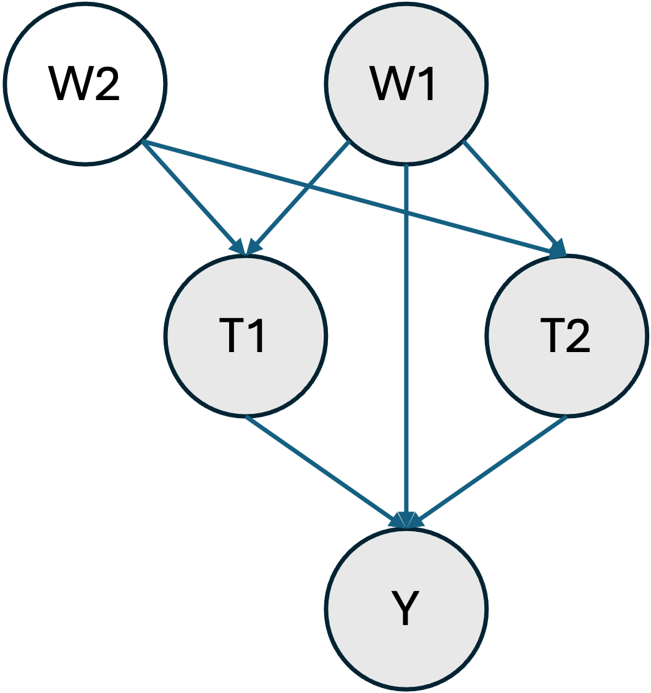

Interaction Estimation
In this example we aim to estimate the average interaction effect of two, potentially correlated, treatment variables T1 and T2 on an outcome Y.
Data Generating Process
Let's consider the following structural causal model where the shaded nodes represent the observed variables.

In other words, only one confounding variable is observed (W1). This would be a major problem if we wanted to estimate the average treatment effect of T1 or T2 on Y separately. However, here, we are interested in interactions and thus W1 is a sufficient adjustment set. This artificial situation is ubiquitous in genetics, where two main sources of confounding exist. Ancestry, can be estimated (here W1) and linkage disequilibrium is usually more challenging to address (here W2).
Let us first define some helper functions and import some libraries.
using Distributions
using Random
using DataFrames
using Statistics
using CategoricalArrays
using TMLE
using CairoMakie
using MLJXGBoostInterface
using MLJBase
using MLJLinearModels
using MLJTuning
using StatisticalMeasures
function estimate_across_correlation_levels(estimators, σs; n=1000)
results = Dict(key => [] for key in keys(estimators))
for σ in σs
dataset = generate_dataset(n=n, σ=σ)
for (estimator_key, estimator) in estimators
result, _ = estimator(Ψ, dataset; verbosity=0)
push!(results[estimator_key], result)
end
end
return results
end
function estimate_across_sample_sizes_and_correlation_levels(estimators, ns, σs)
results = []
for n in ns
results_at_n = estimate_across_correlation_levels(estimators, σs; n=n)
push!(results, results_at_n)
end
return results
end
function plot_across_sample_sizes_and_correlation_levels(results, ns, σs; estimator="TMLE_SL", title="Estimation via TMLE (GLMs)")
fig = Figure(size=(800, 800))
for (index, n) in enumerate(ns)
results_at_n = results[index][estimator]
Ψ̂s = TMLE.estimate.(results_at_n)
errors = last.(confint.(significance_test.(results_at_n))) .- Ψ̂s
ax = if n == last(ns)
Axis(fig[index, 1], xlabel="σ", ylabel="AIE\n(n=$n)")
else
Axis(fig[index, 1], ylabel="AIE\n(n=$n)", xticklabelsvisible=false)
end
errorbars!(ax, σs, Ψ̂s, errors, color = :blue, whiskerwidth = 10)
scatter!(ax, σs, Ψ̂s, color=:red, markersize=10)
hlines!(ax, [-1.5], color=:green, linestyle=:dash)
end
Label(fig[0, :], title; tellwidth=false, fontsize=24)
return fig
end
Random.seed!(123)
μT(w) = [sum(w), sum(w)]
μY(t, w) = 1 + 10t[1] - 3t[2] * t[1] * wμY (generic function with 1 method)We assume that W1 and W2, the confounding variables, follow a uniform distribution.
generate_W(n) = rand(Uniform(0, 1), 2, n)generate_W (generic function with 1 method)T1 and T2 are generated via a copula method through a multivariate normal to induce some statistical dependence (via σ).
function generate_T(W, n; σ=0.5, threshold=0)
covariance = [
1. σ
σ 1.
]
T = zeros(Bool, 2, n)
for i in 1:n
dTi = MultivariateNormal(μT(W[:, i]), covariance)
T[:, i] = rand(dTi) .> threshold
end
return T
endgenerate_T (generic function with 1 method)Finally, Y is generated through a simple linear model with an interaction term.
function generate_Y(T, W1, n; σY=1)
Y = zeros(Float64, n)
for i in 1:n
dY = Normal(μY(T[:, i], W1[i]), σY)
Y[i] = rand(dY)
end
return Y
endgenerate_Y (generic function with 1 method)Importantly, the average interaction effect between T1 and T2 is thus $-3 \mathbb{E}[W] = -1.5$.
We will generate a full dataset with the following function.
function generate_dataset(;n=1000, σ=0.5, threshold=0., σY=1)
W = generate_W(n)
T = generate_T(W, n; σ=σ, threshold=threshold)
W = permutedims(W)
W1 = W[:, 1]
W2 = W[:, 2]
Y = generate_Y(T, W1, n; σY=σY)
T = permutedims(T)
T1 = categorical(T[:, 1])
T2 = categorical(T[:, 2])
return DataFrame(W1=W1, W2=W2, T1=T1, T2=T2, Y=Y)
end
dataset = generate_dataset()
first(dataset, 5)| Row | W1 | W2 | T1 | T2 | Y |
|---|---|---|---|---|---|
| Float64 | Float64 | Cat… | Cat… | Float64 | |
| 1 | 0.9063 | 0.443494 | true | true | 7.34663 |
| 2 | 0.745673 | 0.512083 | true | true | 6.30484 |
| 3 | 0.253849 | 0.334152 | true | true | 9.73191 |
| 4 | 0.427328 | 0.867547 | true | false | 9.49304 |
| 5 | 0.0991336 | 0.125287 | true | true | 11.2495 |
Let's verify that each treatment level is sufficiently present in the dataset (≈positivity).
combine(groupby(dataset, [:T1, :T2]), proprow => :JOINT_TREATMENT_FREQ)| Row | T1 | T2 | JOINT_TREATMENT_FREQ |
|---|---|---|---|
| Cat… | Cat… | Float64 | |
| 1 | false | false | 0.073 |
| 2 | false | true | 0.098 |
| 3 | true | false | 0.107 |
| 4 | true | true | 0.722 |
And that T1 and T2 are indeed correlated.
treatment_correlation(dataset) = cor(unwrap.(dataset.T1), unwrap.(dataset.T2))
treatment_correlation(dataset)0.2918769031970086Estimation
We can now proceed to estimation, for instance using TMLE with linear models.
First, let's define the effect of interest. Interactions are defined via the AIE function (note that we only set W1 as a confounder).
Ψ = AIE(
outcome=:Y,
treatment_values= (
T1=(case=1, control=0),
T2=(case=1, control=0)
),
treatment_confounders = [:W1]
)
linear_models = default_models(G=LogisticClassifier(lambda=0), Q_continuous=LinearRegressor())
estimator = Tmle(models=linear_models, weighted=true)
result, _ = estimator(Ψ, dataset; verbosity=0)
significance_test(result)One sample t-test
-----------------
Population details:
parameter of interest: Mean
value under h_0: 0
point estimate: -1.61436
95% confidence interval: (-2.232, -0.997)
Test summary:
outcome with 95% confidence: reject h_0
two-sided p-value: <1e-06
Details:
number of observations: 1000
t-statistic: -5.131324598616492
degrees of freedom: 999
empirical standard error: 0.3146097888636996
The true effect size is thus covered by our confidence interval.
Varying levels of correlation
We will now vary the correlation level between T1 and T2 to observe how it affects the estimation results across samples sizes. We will also look at three different modelling strategies:
- Generalized linear models (GLMs)
- XGBoost
- Super Learning (SL) via a model selection approach
First, let's see how the parameter σ affects the correlation between T1 and T2.
function plot_correlations(;σs = 0.1:0.1:1, n=1000, threshold=0., σY=1.)
fig = Figure()
ax = Axis(fig[1, 1], xlabel="σ", ylabel="Correlation(T1, T2)")
correlations = map(σs) do σ
dataset = generate_dataset(;n=n, σ=σ, threshold=threshold, σY=σY)
return treatment_correlation(dataset)
end
scatter!(ax, σs, correlations, color=:blue)
return fig
end
σs = [0.1, 0.2, 0.3, 0.4, 0.5, 0.6, 0.7, 0.8, 0.9, 0.95, 0.999]
plot_correlations(;σs=σs, n=10_000)As expected, the correlation between T1 and T2 increases with σ. Let's see how this affects estimation.
We first define our Super Learners, they compare L2 penalized GLM and XGboost models for various penalization parameters λ on a holdout set and select the best model.
lambdas = 10 .^ range(1, stop=-4, length=5)
linear_regressors = [RidgeRegressor(lambda=λ) for λ in lambdas]
logistic_classifiers = [LogisticClassifier(lambda=λ) for λ in lambdas]
xgboost_classifiers = [XGBoostClassifier(tree_method="hist", lambda=λ, nthread=1) for λ in lambdas]
xgboost_regressors = [XGBoostRegressor(tree_method="hist", lambda=λ, nthread=1) for λ in lambdas]
sl_regressor = TunedModel(
models=vcat(linear_regressors, xgboost_regressors),
resampling=Holdout(),
measure=rmse,
check_measure=false
)
sl_classifier = TunedModel(
models=vcat(logistic_classifiers, xgboost_classifiers),
resampling=Holdout(),
measure=log_loss,
check_measure=false
)ProbabilisticTunedModel(
model = LogisticClassifier(
lambda = 10.0,
gamma = 0.0,
penalty = :l2,
fit_intercept = true,
penalize_intercept = false,
scale_penalty_with_samples = true,
solver = nothing),
tuning = Explicit(),
resampling = Holdout(
fraction_train = 0.7,
shuffle = false,
rng = Random.TaskLocalRNG()),
measure = LogLoss(tol = 2.22045e-16),
weights = nothing,
class_weights = nothing,
operation = nothing,
range = MLJModelInterface.Probabilistic[LogisticClassifier(lambda = 10.0, …), LogisticClassifier(lambda = 0.5623413251903491, …), LogisticClassifier(lambda = 0.03162277660168379, …), LogisticClassifier(lambda = 0.0017782794100389228, …), LogisticClassifier(lambda = 0.0001, …), XGBoostClassifier(test = 1, …), XGBoostClassifier(test = 1, …), XGBoostClassifier(test = 1, …), XGBoostClassifier(test = 1, …), XGBoostClassifier(test = 1, …)],
selection_heuristic = MLJTuning.NaiveSelection(nothing),
train_best = true,
repeats = 1,
n = nothing,
acceleration = CPU1{Nothing}(nothing),
acceleration_resampling = CPU1{Nothing}(nothing),
check_measure = false,
cache = true,
compact_history = true,
logger = nothing)Now define the sample sizes and correlation levels we want to explore.
ns = [1000, 10_000, 100_000, 500_000]
σs = [0.1, 0.2, 0.3, 0.4, 0.5, 0.6, 0.7, 0.8, 0.9, 0.95, 0.999]11-element Vector{Float64}:
0.1
0.2
0.3
0.4
0.5
0.6
0.7
0.8
0.9
0.95
0.999and estimate (this will take a little while).
estimators = Dict(
"TMLE_GLM" => Tmle(models=linear_models, weighted=true),
"TMLE_XGBOOST" => Tmle(
models=default_models(G=XGBoostClassifier(tree_method="hist", nthread=1), Q_continuous=XGBoostRegressor(tree_method="hist", nthread=1)),
weighted=true,
),
"TMLE_SL" => Tmle(
models=default_models(G=sl_classifier, Q_continuous=sl_regressor),
weighted=true,
)
)
results = estimate_across_sample_sizes_and_correlation_levels(estimators, ns, σs)4-element Vector{Any}:
Dict{String, Vector{Any}}("TMLE_XGBOOST" => [TMLE.TMLEstimate{Float64}(TMLE.StatisticalAIE(:Y, OrderedCollections.OrderedDict{Symbol, @NamedTuple{control::Int64, case::Int64}}(:T1 => (control = 0, case = 1), :T2 => (control = 0, case = 1)), OrderedCollections.OrderedDict(:T1 => (:W1,), :T2 => (:W1,)), ()), -1.8264895119272448, 2.024153644967099, 1000, [-0.44952758997108483, -2.128900346003171, 2.488969933055741, 3.2672965758129786, 1.6092110667489123, -0.8351578023735722, -1.0157072658739683, -1.7309617337983636, 0.8648167487816749, 3.4715598443491826 … -2.1291016836646426, 2.433286391523281, 2.3052918010395707, -0.08205942440235647, -2.2220414388207876, -0.38559607016964237, 0.011864374471034056, 3.3728271725685603, -0.8922054998147926, -0.1907510387452264]), TMLE.TMLEstimate{Float64}(TMLE.StatisticalAIE(:Y, OrderedCollections.OrderedDict{Symbol, @NamedTuple{control::Int64, case::Int64}}(:T1 => (control = 0, case = 1), :T2 => (control = 0, case = 1)), OrderedCollections.OrderedDict(:T1 => (:W1,), :T2 => (:W1,)), ()), -1.328742890691243, 1.79271141689499, 1000, [-4.161933706463665, -0.12799358091632107, 1.0188696279246694, 0.38970609117858956, -1.9243373747348467, -0.3662198881719997, 0.270503838037766, -2.0959480054431214, 1.2565278082038445, 0.7447702986247694 … 0.2294037445227292, 0.5531394122079987, 2.345586481216513, -3.339392891792684, -0.49235838077298655, 2.1896290619134393, 1.9750071799735491, 0.792082811482819, -1.0475635317418603, -1.311641962483366]), TMLE.TMLEstimate{Float64}(TMLE.StatisticalAIE(:Y, OrderedCollections.OrderedDict{Symbol, @NamedTuple{control::Int64, case::Int64}}(:T1 => (control = 0, case = 1), :T2 => (control = 0, case = 1)), OrderedCollections.OrderedDict(:T1 => (:W1,), :T2 => (:W1,)), ()), -1.3334838579791062, 1.7836283133718596, 1000, [3.9231046172774118, -1.2386989270533266, -0.8349003573821367, 2.600472957893489, -0.2956174440465984, 0.1440372445620145, -0.6197023823004839, -0.812840750835361, 0.6475308495389203, 1.9746178712732987 … -2.9731867387789594, -0.985050646048613, -2.1537141954619363, -2.162994764637621, -0.453586483899969, 0.3934171977606119, -0.5864823861290094, -0.43175321228770525, -2.955215336288802, -1.4365534867217413]), TMLE.TMLEstimate{Float64}(TMLE.StatisticalAIE(:Y, OrderedCollections.OrderedDict{Symbol, @NamedTuple{control::Int64, case::Int64}}(:T1 => (control = 0, case = 1), :T2 => (control = 0, case = 1)), OrderedCollections.OrderedDict(:T1 => (:W1,), :T2 => (:W1,)), ()), -1.4198750153321096, 1.8282172771094585, 1000, [2.106751110678214, -3.1561258319998835, 2.2459994564692827, -0.15237816229419965, -1.1630665096448687, -2.156351739509536, -2.259392059788252, -0.9840997558533479, -0.8013046988880123, 2.48659359083754 … -2.2113697574254907, 0.36623231694158975, -1.7857453623775088, 1.081646257272773, 2.2735157467637874, -1.6979951859715712, 0.4655243102446022, -1.7669380277609839, -0.6377029509590961, 1.7680385454410992]), TMLE.TMLEstimate{Float64}(TMLE.StatisticalAIE(:Y, OrderedCollections.OrderedDict{Symbol, @NamedTuple{control::Int64, case::Int64}}(:T1 => (control = 0, case = 1), :T2 => (control = 0, case = 1)), OrderedCollections.OrderedDict(:T1 => (:W1,), :T2 => (:W1,)), ()), -1.240331165334193, 2.1506758600693057, 1000, [-1.595442930812526, -3.7750355099368726, 2.1789010363433783, -0.4901122185596427, -2.1626257824481074, 3.152412669194706, 1.3032061217384954, 1.3920538075157716, -1.074978668893705, 3.214792916489313 … 1.7620953050163122, 0.16515231137888609, 2.3612300437584155, -2.0325794286297483, 1.213253179900929, -1.392806191380348, -8.424143662617023, -2.5401360419658965, 0.41706400280544964, -1.5144207473082656]), TMLE.TMLEstimate{Float64}(TMLE.StatisticalAIE(:Y, OrderedCollections.OrderedDict{Symbol, @NamedTuple{control::Int64, case::Int64}}(:T1 => (control = 0, case = 1), :T2 => (control = 0, case = 1)), OrderedCollections.OrderedDict(:T1 => (:W1,), :T2 => (:W1,)), ()), -1.7689537988863568, 1.6857934744023149, 1000, [1.0677037806235354, -0.5502254353459166, -1.041458217632464, -0.3821269950795191, -1.716227340827572, -0.4894273824126363, 0.69900649545394, -0.944270917805101, 2.084897263528315, -1.642802858830811 … 2.543812897662618, -0.2369617756173874, -0.49756626191613984, -1.0778685545468978, 1.3369113511709267, -0.28096859568640764, 0.9209345758895454, 1.9762612432149216, -0.8115323211833723, 1.990309362122526]), TMLE.TMLEstimate{Float64}(TMLE.StatisticalAIE(:Y, OrderedCollections.OrderedDict{Symbol, @NamedTuple{control::Int64, case::Int64}}(:T1 => (control = 0, case = 1), :T2 => (control = 0, case = 1)), OrderedCollections.OrderedDict(:T1 => (:W1,), :T2 => (:W1,)), ()), -1.6046155310603003, 1.7354946247896927, 1000, [0.22550833311245125, 0.2875900840763108, 1.3187087029895628, -0.412523811523111, -1.2653046304679065, 0.9874825857620333, 0.010453535969775718, -1.6360980789801827, -2.2103612563062454, -1.193567768772 … -1.3825990341211352, 2.939610282994317, -1.6271012082300589, -1.2615560605532323, -1.9045804126140666, 1.5294532323557688, -1.0543656893806572, -2.147172050747427, 0.02077377994799423, 2.894177204808707]), TMLE.TMLEstimate{Float64}(TMLE.StatisticalAIE(:Y, OrderedCollections.OrderedDict{Symbol, @NamedTuple{control::Int64, case::Int64}}(:T1 => (control = 0, case = 1), :T2 => (control = 0, case = 1)), OrderedCollections.OrderedDict(:T1 => (:W1,), :T2 => (:W1,)), ()), -1.5733404283016383, 1.9354799339926096, 1000, [1.331305842844542, -2.079530189443958, 2.0213225625624656, 0.729088031896693, 0.659215598121587, -1.749405439928409, -1.3865286542842592, -0.8429204103490111, 2.271792272366799, 0.6425468000739785 … -1.3652187259076873, 0.24545230365360532, -2.9635922774979475, 1.3558163336201452, -1.7510526627105891, 0.6878137593965966, -0.92080968259514, -1.5061159610425663, -1.2546835837536885, -1.800485917396626]), TMLE.TMLEstimate{Float64}(TMLE.StatisticalAIE(:Y, OrderedCollections.OrderedDict{Symbol, @NamedTuple{control::Int64, case::Int64}}(:T1 => (control = 0, case = 1), :T2 => (control = 0, case = 1)), OrderedCollections.OrderedDict(:T1 => (:W1,), :T2 => (:W1,)), ()), -0.9323126728977054, 1.6861633937392657, 1000, [-1.945877032458312, -1.0162537662251165, -1.8718557399875115, 2.2625214831253917, 3.74311262725507, -0.9055506441058778, -0.06040070440951942, -3.6351091986962576, -2.0076067954602625, -2.3513476099737742 … -0.04119866563214436, -0.16022191163014088, -1.6152086876437752, -0.18942586546375523, 2.2720500496363467, 1.721278957874047, 4.034180404766813, 5.570518188085451, -2.089155444618944, -3.63128266511805]), TMLE.TMLEstimate{Float64}(TMLE.StatisticalAIE(:Y, OrderedCollections.OrderedDict{Symbol, @NamedTuple{control::Int64, case::Int64}}(:T1 => (control = 0, case = 1), :T2 => (control = 0, case = 1)), OrderedCollections.OrderedDict(:T1 => (:W1,), :T2 => (:W1,)), ()), -1.9509053746775982, 1.7376661598888514, 1000, [-0.60205032659843, 0.6939557203491656, -0.789457946424948, -0.471311920842671, -1.215741858470603, -0.43191632131582686, 0.4965828650339404, 1.1602595745655253, -0.4234749326826426, 0.7773613269163772 … -4.351837910732819, -1.6523713700338998, 2.3544642239360525, -2.204784478163016, -2.819146786721621, -1.978553352338386, 2.5877295763674084, 3.6578181748792016, -0.1102144952631059, 3.860852981667949]), TMLE.TMLEstimate{Float64}(TMLE.StatisticalAIE(:Y, OrderedCollections.OrderedDict{Symbol, @NamedTuple{control::Int64, case::Int64}}(:T1 => (control = 0, case = 1), :T2 => (control = 0, case = 1)), OrderedCollections.OrderedDict(:T1 => (:W1,), :T2 => (:W1,)), ()), -0.2226897302553447, 1.1598558071587577, 1000, [-0.7810185644484081, 1.1120981096968492, -0.005349002542841957, -1.4485429714081373, -0.7952697437144712, -0.32735673411121347, 1.3254663688663262, -0.3674597733453068, -0.4326009420028627, -0.2596720370178255 … -1.351760693885438, -1.0496686312295822, -0.2790548302340878, -0.23869251295590171, -1.2500023086075633, 1.056225736819489, 1.518341623251882, 1.2364851964164814, -0.7112442775134911, -0.741190810196913])], "TMLE_SL" => [TMLE.TMLEstimate{Float64}(TMLE.StatisticalAIE(:Y, OrderedCollections.OrderedDict{Symbol, @NamedTuple{control::Int64, case::Int64}}(:T1 => (control = 0, case = 1), :T2 => (control = 0, case = 1)), OrderedCollections.OrderedDict(:T1 => (:W1,), :T2 => (:W1,)), ()), -1.8150426111330527, 3.7940946742269617, 1000, [0.041520759139914376, -2.4375829326799874, 2.595363362097126, 5.587522061881307, 2.0473473763135166, -0.7881976421988389, -0.37347565518188497, -1.7784391398522355, 0.8865262166270136, 3.011096379486316 … -2.043287532603131, 2.360467292563662, 1.5101173705744937, 13.005888739523417, -1.935191981193382, 0.2547933989244653, 0.8747734543329424, 5.9117924951017455, -0.36520636274357954, -0.6355628390425528]), TMLE.TMLEstimate{Float64}(TMLE.StatisticalAIE(:Y, OrderedCollections.OrderedDict{Symbol, @NamedTuple{control::Int64, case::Int64}}(:T1 => (control = 0, case = 1), :T2 => (control = 0, case = 1)), OrderedCollections.OrderedDict(:T1 => (:W1,), :T2 => (:W1,)), ()), -1.5966127341762562, 6.975055892670792, 1000, [-3.6085706330184926, 5.002055995527516, 0.44011434275231637, 3.6611841287420996, 0.7248295286521338, -2.12835957094706, -1.344521181447324, -2.481623861500423, 2.193855203272967, 0.2009225230814489 … 1.4691624591385877, 0.11932786972936124, 3.4637760419477557, -1.6050310569444504, -0.2618916882695609, -3.158503277821039, 2.097687671439367, 3.5071848310525895, 0.10844611273759897, -0.27855898674575863]), TMLE.TMLEstimate{Float64}(TMLE.StatisticalAIE(:Y, OrderedCollections.OrderedDict{Symbol, @NamedTuple{control::Int64, case::Int64}}(:T1 => (control = 0, case = 1), :T2 => (control = 0, case = 1)), OrderedCollections.OrderedDict(:T1 => (:W1,), :T2 => (:W1,)), ()), -1.3956005119033703, 4.919623407724799, 1000, [3.3857987895642627, -1.134885512423129, -0.763592431527056, 3.9726901335181974, -3.143293287603118, 0.2765755360698693, -1.515263013305705, -0.08248960473907585, 3.325841416212904, 5.880696185994026 … -13.09596119592177, -1.775923458508439, -5.191278231640776, -7.490368357325889, -0.735533412316622, 0.49380435396278655, -1.5822421312351858, -0.6691785013135301, -2.3149352991588517, -7.675852265871985]), TMLE.TMLEstimate{Float64}(TMLE.StatisticalAIE(:Y, OrderedCollections.OrderedDict{Symbol, @NamedTuple{control::Int64, case::Int64}}(:T1 => (control = 0, case = 1), :T2 => (control = 0, case = 1)), OrderedCollections.OrderedDict(:T1 => (:W1,), :T2 => (:W1,)), ()), -1.4251534623299587, 6.572434001069831, 1000, [13.505957199777997, -1.9784735410173109, 2.074360526792762, 1.0744482668410786, 0.775416267835437, -0.8170478865493225, 0.4602959173128133, 0.26579771629241516, 0.33346377523733756, 19.6704449189541 … -0.673608067786425, 1.064275462166621, 0.4929651302603027, 2.05112413868923, 11.660073225983645, -0.12047484350463196, 0.7552092564220155, 0.25875609000129646, -0.8959247266097252, 2.3390687845396316]), TMLE.TMLEstimate{Float64}(TMLE.StatisticalAIE(:Y, OrderedCollections.OrderedDict{Symbol, @NamedTuple{control::Int64, case::Int64}}(:T1 => (control = 0, case = 1), :T2 => (control = 0, case = 1)), OrderedCollections.OrderedDict(:T1 => (:W1,), :T2 => (:W1,)), ()), -0.5580503673675209, 9.177043323606368, 1000, [-0.3512498020945905, -1.417007741170221, -6.668393783530888, -0.5977894849126109, -2.0481321811177366, 5.195838573099311, 2.262510893570733, 1.9698789594605386, 0.33299928073740853, 2.592422804109396 … 6.233623368427922, 15.555757638809748, -0.02590026447832139, -0.4319371303800867, 1.7041516989547025, -9.461571092502329, -37.832458642973805, -26.725361948831065, 0.9273176963929753, -15.518542956633452]), TMLE.TMLEstimate{Float64}(TMLE.StatisticalAIE(:Y, OrderedCollections.OrderedDict{Symbol, @NamedTuple{control::Int64, case::Int64}}(:T1 => (control = 0, case = 1), :T2 => (control = 0, case = 1)), OrderedCollections.OrderedDict(:T1 => (:W1,), :T2 => (:W1,)), ()), -1.7509800651431746, 4.422375267215619, 1000, [1.0155408086462994, -3.130874738521671, -0.8150923390367861, -0.18051249165867644, -1.4610421180660977, -0.3045169436835473, -1.2999425947078382, -5.783113939316648, 2.1126067573023306, -0.7941011249067859 … 5.687634866419417, -0.9055681834454434, -0.1439915453747111, -0.9414221684112194, 0.7727453683089368, -6.298389341494406, 0.9486153329432128, 4.114118445530619, -3.714107255543042, 2.588784599654331]), TMLE.TMLEstimate{Float64}(TMLE.StatisticalAIE(:Y, OrderedCollections.OrderedDict{Symbol, @NamedTuple{control::Int64, case::Int64}}(:T1 => (control = 0, case = 1), :T2 => (control = 0, case = 1)), OrderedCollections.OrderedDict(:T1 => (:W1,), :T2 => (:W1,)), ()), -1.7011254478344469, 8.528127498264201, 1000, [0.3666379291368171, 1.6241279983241064, 1.0415296645583227, -0.08046893267089918, -13.813401260820035, 3.059873601931609, 1.159349619718289, -1.121676989535402, -1.332387649720388, -1.1582048893948491 … -0.804449597398519, 19.542523907884654, -1.752345152950439, -0.6872159609324251, 5.978688346343526, 2.914344849900825, -3.507836828277483, -2.1721964546042773, 1.6878247790342393, 11.94053648575626]), TMLE.TMLEstimate{Float64}(TMLE.StatisticalAIE(:Y, OrderedCollections.OrderedDict{Symbol, @NamedTuple{control::Int64, case::Int64}}(:T1 => (control = 0, case = 1), :T2 => (control = 0, case = 1)), OrderedCollections.OrderedDict(:T1 => (:W1,), :T2 => (:W1,)), ()), -1.5493857353499647, 4.323300184278207, 1000, [6.287164984442086, -1.8494807635634776, 13.768528630323775, 0.9812067437303416, 0.4540028576162437, -6.772752937905752, -2.6412048748751227, -0.8986397268040767, 2.5752206721862163, 0.8109187464816411 … -1.7557391292437945, -0.4274962708689043, -2.2569757617917814, 1.3006834127141484, -2.435559710441897, 0.5994476106490191, -1.411849937084035, -1.5263620173537933, -0.7376188455689581, -2.462911453730718]), TMLE.TMLEstimate{Float64}(TMLE.StatisticalAIE(:Y, OrderedCollections.OrderedDict{Symbol, @NamedTuple{control::Int64, case::Int64}}(:T1 => (control = 0, case = 1), :T2 => (control = 0, case = 1)), OrderedCollections.OrderedDict(:T1 => (:W1,), :T2 => (:W1,)), ()), -0.5873055078630498, 8.16079738005585, 1000, [-1.4128606921084736, -11.609752500764742, -0.9480631899100077, 2.130849453986352, 10.385901778066348, 0.08544290332486931, 1.3378290803284594, -9.094870383404645, -0.8493872625260902, -1.6654001559871114 … 0.3624158065708903, 0.6829781539285581, -0.3500313080086209, 0.7563976292808682, 13.006731074461177, 1.5366508704687154, 23.80542859602454, 18.581472776545468, -0.8270596009486176, -6.410690762276784]), TMLE.TMLEstimate{Float64}(TMLE.StatisticalAIE(:Y, OrderedCollections.OrderedDict{Symbol, @NamedTuple{control::Int64, case::Int64}}(:T1 => (control = 0, case = 1), :T2 => (control = 0, case = 1)), OrderedCollections.OrderedDict(:T1 => (:W1,), :T2 => (:W1,)), ()), -1.5633374743773873, 13.827775500829445, 1000, [-1.198205615818262, 0.9730186622734933, 1.1605019057448869, 1.246952745456955, 0.13105451615855193, -0.18385904722949617, 25.782292696285012, 0.4882545439898239, 0.20488291009007714, 1.5250617326389244 … -3.463869031341646, -0.43051795211930816, -4.334438295445917, -1.36538125808827, -1.6342504517651089, 0.6398109285436733, 2.606705815399381, 2.336478763964942, 1.799500490462905, 5.7455370875844505]), TMLE.TMLEstimate{Float64}(TMLE.StatisticalAIE(:Y, OrderedCollections.OrderedDict{Symbol, @NamedTuple{control::Int64, case::Int64}}(:T1 => (control = 0, case = 1), :T2 => (control = 0, case = 1)), OrderedCollections.OrderedDict(:T1 => (:W1,), :T2 => (:W1,)), ()), -0.3202324406445032, 28.533593163080354, 1000, [-0.796658186566239, 2.996281241022956, -1.3792813985265282, 0.1240329308389163, -1.7087358633335672, 0.011375504328799555, 1.0195301491882196, 0.6325830777980802, -0.10630486320127534, -0.19119094394291078 … -0.8940537263557884, -1.184413884837585, 0.6275962887696244, -3.123774452602232, -1.9269044529305037, 1.7442738461553837, 3.9601603851694236, 2.7511475867109025, -0.6305671783705635, -1.4053873903087228])], "TMLE_GLM" => [TMLE.TMLEstimate{Float64}(TMLE.StatisticalAIE(:Y, OrderedCollections.OrderedDict{Symbol, @NamedTuple{control::Int64, case::Int64}}(:T1 => (control = 0, case = 1), :T2 => (control = 0, case = 1)), OrderedCollections.OrderedDict(:T1 => (:W1,), :T2 => (:W1,)), ()), -1.7653680202399047, 7.479732886459194, 1000, [-0.9148686148868578, -1.5574670231324146, 2.8677107247204203, 4.917159345184851, 3.778120615476796, 1.1548918929723362, 1.0555887508503907, -1.4732460097012958, 2.463050269240381, 2.996204942011217 … -1.4035928823456707, 2.7956366502266894, 0.21129100918654267, 121.38311208450367, -0.5313129811525357, 1.0370680953989122, 2.144571511201133, 6.56623083910885, 1.1002095930762628, 0.4968505018602396]), TMLE.TMLEstimate{Float64}(TMLE.StatisticalAIE(:Y, OrderedCollections.OrderedDict{Symbol, @NamedTuple{control::Int64, case::Int64}}(:T1 => (control = 0, case = 1), :T2 => (control = 0, case = 1)), OrderedCollections.OrderedDict(:T1 => (:W1,), :T2 => (:W1,)), ()), -1.602534882373424, 7.191747980408038, 1000, [-3.5625539370006285, 5.072261218697834, 0.43751759170714677, 3.7225148851268997, 0.7190264840503688, -2.112137173974956, -1.3287612757893608, -2.4615803169915336, 2.1823854778946656, 0.22724811830596223 … 1.4618813860563968, 0.11988241467928507, 3.4284095027764105, -1.628516692705276, -0.2563377299021046, -2.939992920340411, 2.0945930114197657, 3.2707160451143196, 0.147147066728824, -0.2726461148568495]), TMLE.TMLEstimate{Float64}(TMLE.StatisticalAIE(:Y, OrderedCollections.OrderedDict{Symbol, @NamedTuple{control::Int64, case::Int64}}(:T1 => (control = 0, case = 1), :T2 => (control = 0, case = 1)), OrderedCollections.OrderedDict(:T1 => (:W1,), :T2 => (:W1,)), ()), -1.3840676365596554, 8.57788155660459, 1000, [4.089351765533329, -0.6360050655050589, 0.16646226573725145, 7.805193215482792, 0.588297703123088, 2.2339109172265497, 0.43323298279453193, 0.04896421773632352, 7.6749774237254575, 8.886696945216913 … -31.38165632794354, -1.5678091114486343, -8.79867727884898, -13.061142970628904, -0.4234875484868461, 1.960330024083535, -0.8677619412164255, -0.7192567534391335, -2.181171019111984, -28.303388042507116]), TMLE.TMLEstimate{Float64}(TMLE.StatisticalAIE(:Y, OrderedCollections.OrderedDict{Symbol, @NamedTuple{control::Int64, case::Int64}}(:T1 => (control = 0, case = 1), :T2 => (control = 0, case = 1)), OrderedCollections.OrderedDict(:T1 => (:W1,), :T2 => (:W1,)), ()), -1.4113578486833038, 6.6880061761136105, 1000, [14.313868597565662, -1.9684262714782288, 2.0591602520275525, 1.0883254726332927, 0.787001937496683, -0.8342404638410053, 0.4617111155055363, 0.2698502904532276, 0.3429936336199997, 20.460187842548805 … -0.690395925118742, 1.0486035724858025, 0.4956221279120751, 1.9941853764959643, 10.6360271859286, -0.11901703002261943, 0.7175959864570544, 0.21938035861384844, -0.9630373417597246, 2.8590383662790857]), TMLE.TMLEstimate{Float64}(TMLE.StatisticalAIE(:Y, OrderedCollections.OrderedDict{Symbol, @NamedTuple{control::Int64, case::Int64}}(:T1 => (control = 0, case = 1), :T2 => (control = 0, case = 1)), OrderedCollections.OrderedDict(:T1 => (:W1,), :T2 => (:W1,)), ()), -0.5551608300213786, 9.242201430821694, 1000, [-0.35316988713754327, -1.416005148830612, -6.609054148904847, -0.6000035881369873, -2.047380477656997, 5.200936238874366, 2.2263054744368134, 1.967166562513252, 0.3314927811788884, 2.589894258608201 … 6.187456087493969, 15.758896617752148, -0.07223118991673663, -0.43112909335747523, 1.7011956330157068, -9.396704591855817, -38.012329538005325, -26.69050198892127, 0.8921674939609142, -15.411665281652105]), TMLE.TMLEstimate{Float64}(TMLE.StatisticalAIE(:Y, OrderedCollections.OrderedDict{Symbol, @NamedTuple{control::Int64, case::Int64}}(:T1 => (control = 0, case = 1), :T2 => (control = 0, case = 1)), OrderedCollections.OrderedDict(:T1 => (:W1,), :T2 => (:W1,)), ()), -1.449382523526282, 7.768815914033723, 1000, [1.833749192984622, -7.8836777661361035, 0.47167914414798895, 0.6290175798416837, -0.6735005541769443, 0.058243609798651695, 13.539704201308144, -2.049097062287532, -5.642203093068729, 0.07125283602709835 … 2.922423204935205, -1.601047253112029, -0.1489936490015686, -0.5683517157820727, 0.41037001512727195, -14.303739204639264, 1.778332354286271, 3.171170464337412, -14.512528693466713, 2.66877205508454]), TMLE.TMLEstimate{Float64}(TMLE.StatisticalAIE(:Y, OrderedCollections.OrderedDict{Symbol, @NamedTuple{control::Int64, case::Int64}}(:T1 => (control = 0, case = 1), :T2 => (control = 0, case = 1)), OrderedCollections.OrderedDict(:T1 => (:W1,), :T2 => (:W1,)), ()), -1.720623175513083, 9.083391914160915, 1000, [0.32004764739574587, 1.6014421993244747, 1.0384460164035954, -0.08930603060558037, -13.321887666173884, 3.0286333136704244, 1.1677731470475896, -1.1316211446997742, -1.3313911450077012, -1.1230565396462089 … -0.8120253102981312, 18.52826497062486, -1.7265019309768526, -0.7280088673563084, 6.69135153444559, 2.884413096258446, -3.106225177457045, -2.1664495525658727, 1.6652998421184089, 12.001247270491609]), TMLE.TMLEstimate{Float64}(TMLE.StatisticalAIE(:Y, OrderedCollections.OrderedDict{Symbol, @NamedTuple{control::Int64, case::Int64}}(:T1 => (control = 0, case = 1), :T2 => (control = 0, case = 1)), OrderedCollections.OrderedDict(:T1 => (:W1,), :T2 => (:W1,)), ()), -1.7450564240655442, 9.217682940951107, 1000, [22.965544987299, -0.03688932942749475, 14.916567471709088, 1.370954107692682, 0.09354703970208456, -8.799330947793694, -11.549640222710197, 0.39448407265354646, 3.285874774468531, 1.1318766254895407 … -1.5220218160108552, -1.2045350605650544, -0.2993384995527142, 1.543953125191639, -1.7996707233618492, 1.324588169881702, -1.6585445881166851, -0.11669474696166024, 0.21947716824975155, -1.7603389257255113]), TMLE.TMLEstimate{Float64}(TMLE.StatisticalAIE(:Y, OrderedCollections.OrderedDict{Symbol, @NamedTuple{control::Int64, case::Int64}}(:T1 => (control = 0, case = 1), :T2 => (control = 0, case = 1)), OrderedCollections.OrderedDict(:T1 => (:W1,), :T2 => (:W1,)), ()), -0.6184148308760554, 10.160666997243021, 1000, [-1.330205244528225, -13.541535106105929, -0.8825752570997497, 2.285049660542087, 7.842251586710428, 0.0934140868009932, 1.3423195891161535, -9.97587436187174, -0.7955783139374573, -1.670563349508463 … 0.3596959962773803, 0.6466716686756946, -0.3217394116501651, 0.7702991436007922, 13.966413332484244, 1.6338294600993435, 25.652271072767817, 19.946041077980677, -0.7703370630393531, -6.867315119162835]), TMLE.TMLEstimate{Float64}(TMLE.StatisticalAIE(:Y, OrderedCollections.OrderedDict{Symbol, @NamedTuple{control::Int64, case::Int64}}(:T1 => (control = 0, case = 1), :T2 => (control = 0, case = 1)), OrderedCollections.OrderedDict(:T1 => (:W1,), :T2 => (:W1,)), ()), -1.5859342251303024, 14.054320734975699, 1000, [-1.1949630750475335, 0.9780600553060024, 1.1657727063064376, 1.2517500016576892, 0.1369587166947266, -0.1773423374566224, 27.468373769167307, 0.49367152975904943, 0.2106313313640738, 1.5294206946148636 … -3.451019461214318, -0.42423445244548236, -4.279631319495108, -1.3584344674736888, -1.6251163168524245, 0.6454752264846181, 2.6108531785525315, 2.343750715292516, 1.8036280124725719, 5.764414378120248]), TMLE.TMLEstimate{Float64}(TMLE.StatisticalAIE(:Y, OrderedCollections.OrderedDict{Symbol, @NamedTuple{control::Int64, case::Int64}}(:T1 => (control = 0, case = 1), :T2 => (control = 0, case = 1)), OrderedCollections.OrderedDict(:T1 => (:W1,), :T2 => (:W1,)), ()), -0.5671694664822203, 16.878894492151222, 1000, [-0.7354073335104799, 3.027492870333864, -1.3274230721217202, 0.17272097950950052, -1.621000550020438, 0.05370518343236984, 1.1016881214414909, 0.6717519356854389, -0.04920924062560382, -0.14011796408829996 … -0.8533117020112443, -1.1318138427984925, 0.6843900804009748, -2.8501689390237193, -1.8992688295723021, 1.794999787242781, 4.409720089403356, 2.78704853944915, -0.5870578305089382, -1.0917108906256674])])
Dict{String, Vector{Any}}("TMLE_XGBOOST" => [TMLE.TMLEstimate{Float64}(TMLE.StatisticalAIE(:Y, OrderedCollections.OrderedDict{Symbol, @NamedTuple{control::Int64, case::Int64}}(:T1 => (control = 0, case = 1), :T2 => (control = 0, case = 1)), OrderedCollections.OrderedDict(:T1 => (:W1,), :T2 => (:W1,)), ()), -1.4598848573448233, 4.84757872176093, 10000, [-0.9775864381239527, -3.1854578230357165, 1.5448278721362811, 1.4113747912379009, -3.3201388448829725, 0.5599868472115181, -1.0323894336622448, 0.7042127443806911, 1.8149509934467192, 0.8207408839362054 … 1.692603093306418, 4.849848844149863, 1.3342787984915452, 1.9342232921228564, -0.38976689233994977, -0.5551207438038024, -0.14448679204599413, -1.0233741156049383, 10.22115403242836, -1.403062695896806]), TMLE.TMLEstimate{Float64}(TMLE.StatisticalAIE(:Y, OrderedCollections.OrderedDict{Symbol, @NamedTuple{control::Int64, case::Int64}}(:T1 => (control = 0, case = 1), :T2 => (control = 0, case = 1)), OrderedCollections.OrderedDict(:T1 => (:W1,), :T2 => (:W1,)), ()), -1.362044793434657, 5.080214164605118, 10000, [1.0173008383483584, -12.470603111073563, -6.439019587002077, -1.2506808978281598, -0.014344090337307727, -0.9508568949636833, 0.2253633649439829, 1.4034129088243499, -2.121322952551016, 8.315659754725916 … 1.136748675744798, 1.2314172820420684, -2.3391714473977236, 1.378335135743951, 2.7603701005034815, 2.788609095437529, 1.3278403346331218, 0.3611515419707678, 14.630827972640656, 0.03383811023174266]), TMLE.TMLEstimate{Float64}(TMLE.StatisticalAIE(:Y, OrderedCollections.OrderedDict{Symbol, @NamedTuple{control::Int64, case::Int64}}(:T1 => (control = 0, case = 1), :T2 => (control = 0, case = 1)), OrderedCollections.OrderedDict(:T1 => (:W1,), :T2 => (:W1,)), ()), -1.4148581283869768, 5.156713120661327, 10000, [-0.21347858439451683, 0.45410836029285084, 0.4305939816182484, -2.611394099864986, -2.7010734183062755, -1.4320973199478058, -2.969091375864903, 2.1793385646531855, 1.788275800948683, 7.764048201415445 … -3.029921044467655, -0.975312118992556, -0.06740550502115206, 2.2726999344011456, -1.1230903533425138, -6.913818172608291, 0.8795071243424102, 0.2708458761669521, 1.6863870319086554, 13.58188127797267]), TMLE.TMLEstimate{Float64}(TMLE.StatisticalAIE(:Y, OrderedCollections.OrderedDict{Symbol, @NamedTuple{control::Int64, case::Int64}}(:T1 => (control = 0, case = 1), :T2 => (control = 0, case = 1)), OrderedCollections.OrderedDict(:T1 => (:W1,), :T2 => (:W1,)), ()), -1.5613406024812586, 5.221265680462536, 10000, [-4.5616278260337895, -0.6688375633053971, -14.648746692098566, -0.3820461015546443, -0.7344547233023873, 5.210482125607241, 0.2847754006768168, -1.1586227494535453, 1.3471277899513279, 2.259990251791786 … -4.067194789298374, 3.087641107174221, 0.4362925626794203, 2.9906472807299087, 0.6944694287379334, -1.6402990650640672, -9.43147772168035, -3.167276153643917, -2.5734024430163274, 1.4951433832647958]), TMLE.TMLEstimate{Float64}(TMLE.StatisticalAIE(:Y, OrderedCollections.OrderedDict{Symbol, @NamedTuple{control::Int64, case::Int64}}(:T1 => (control = 0, case = 1), :T2 => (control = 0, case = 1)), OrderedCollections.OrderedDict(:T1 => (:W1,), :T2 => (:W1,)), ()), -1.3292658099647092, 4.955693027571589, 10000, [-0.35065772080959656, -2.217070146395078, -1.185431898648153, 0.8692777030935668, -0.12120953341328705, 0.4913104776201904, -1.4687056845954212, -0.9648289226888608, 2.926266515937476, -6.657036708019067 … 3.217123319610825, 4.0382440234491686, -2.520309577524264, 1.0458748966822315, 0.6499034274433817, -0.9660985675756701, -3.8640477273604024, -0.21109982006437947, -1.2657619657581458, -1.9244304488810877]), TMLE.TMLEstimate{Float64}(TMLE.StatisticalAIE(:Y, OrderedCollections.OrderedDict{Symbol, @NamedTuple{control::Int64, case::Int64}}(:T1 => (control = 0, case = 1), :T2 => (control = 0, case = 1)), OrderedCollections.OrderedDict(:T1 => (:W1,), :T2 => (:W1,)), ()), -1.5942553891061824, 5.210608126063858, 10000, [-0.10311475153923277, 8.277441108985855, -2.510163786070185, -0.2890430238479079, -0.14724823015112787, -0.06685973994148486, -1.5500661575750678, 4.451842837191391, 1.7115060760175624, -0.5079837386796471 … -5.561704554424333, 2.110612702681826, 6.323577962033567, -6.575627858003404, 0.45089658194850346, 2.4904461010093293, 0.1744099466768324, -0.3600857091107029, -3.475295260908031, 4.46723151161501]), TMLE.TMLEstimate{Float64}(TMLE.StatisticalAIE(:Y, OrderedCollections.OrderedDict{Symbol, @NamedTuple{control::Int64, case::Int64}}(:T1 => (control = 0, case = 1), :T2 => (control = 0, case = 1)), OrderedCollections.OrderedDict(:T1 => (:W1,), :T2 => (:W1,)), ()), -1.452154771225993, 5.199840689005111, 10000, [-0.9516710987766714, -0.44427843543088696, -2.577986280572357, 1.573391599976282, 1.5694528082802965, -0.6775504019642569, 0.3223705997631597, -0.922767964506618, 2.714531632967849, 2.1455928138990323 … -1.9371966477488658, -0.03541792353209894, -1.5667768634639805, -1.6811503178551916, -0.40964868872778826, -0.7902351053346928, 2.3660575783510778, 2.5380239728185536, 33.961427165126615, -0.8935590792881669]), TMLE.TMLEstimate{Float64}(TMLE.StatisticalAIE(:Y, OrderedCollections.OrderedDict{Symbol, @NamedTuple{control::Int64, case::Int64}}(:T1 => (control = 0, case = 1), :T2 => (control = 0, case = 1)), OrderedCollections.OrderedDict(:T1 => (:W1,), :T2 => (:W1,)), ()), -1.478813763392832, 5.2635317294518345, 10000, [-0.665071810835683, -2.422410265376583, -0.31050754860025986, 12.32910631752033, -0.20825288621853288, 0.5618511762707287, -7.408169865656539, 1.7305739799031337, 1.022675840791845, -5.119330451815427 … 2.7346724210914277, 0.13335749482676817, -2.5121504890075697, -0.2808685514983909, -4.392573753561607, -1.9230022359104404, -1.1024083199893138, 0.3024850609766132, -0.40921051094272554, 1.3074228251235027]), TMLE.TMLEstimate{Float64}(TMLE.StatisticalAIE(:Y, OrderedCollections.OrderedDict{Symbol, @NamedTuple{control::Int64, case::Int64}}(:T1 => (control = 0, case = 1), :T2 => (control = 0, case = 1)), OrderedCollections.OrderedDict(:T1 => (:W1,), :T2 => (:W1,)), ()), -1.474976224914042, 5.716019360738687, 10000, [-0.9401652580839179, -0.22952805248184682, 0.63297372755815, 0.6687558259452447, -3.0876540173253093, -4.188558428257989, -1.1699696723495705, 0.3745349746331036, -3.80220451073133, -0.8956632528994906 … -3.4092964723062114, 0.5287234818630977, -0.014807347678438276, -1.5295226585816333, 0.017521002434043087, 1.036437511609894, 0.6441094834517886, -0.2434447738986013, 1.2788786051350098, 7.51100709995757]), TMLE.TMLEstimate{Float64}(TMLE.StatisticalAIE(:Y, OrderedCollections.OrderedDict{Symbol, @NamedTuple{control::Int64, case::Int64}}(:T1 => (control = 0, case = 1), :T2 => (control = 0, case = 1)), OrderedCollections.OrderedDict(:T1 => (:W1,), :T2 => (:W1,)), ()), -1.466684573913816, 5.11874806080554, 10000, [-1.7360576569883295, 16.108212755950554, 2.056442011084871, 5.491220000782432, 2.705924066867435, -0.27913501864461915, -0.30951276370471015, -1.7064249247405257, -4.2333821920581425, 1.550648612102513 … -2.5741460792623245, -0.06164504192053544, -1.0193992040010804, -2.5916862934636127, -0.8455592769065814, -0.7384748867097977, 1.0533917990322053, -4.310341486836646, 1.004110560459507, 0.44332968084068336]), TMLE.TMLEstimate{Float64}(TMLE.StatisticalAIE(:Y, OrderedCollections.OrderedDict{Symbol, @NamedTuple{control::Int64, case::Int64}}(:T1 => (control = 0, case = 1), :T2 => (control = 0, case = 1)), OrderedCollections.OrderedDict(:T1 => (:W1,), :T2 => (:W1,)), ()), -1.7043891571623762, 4.153137274242447, 10000, [-0.6628595642207392, -3.2613898324103765, 0.4799363927969431, -0.2835375727669516, -2.66742472899813, -0.8388658461278556, -0.3754995541627832, -0.17466542308771005, 1.7160063122038796, -1.5521095432950873 … -0.022400705468068105, -1.8577320790534013, 0.327816545450545, -0.07450258271337246, -2.3087974177542447, -1.8725880802228585, 0.3412936747692292, -3.8000578692744753, -2.5171678881853308, 1.0205886787537601])], "TMLE_SL" => [TMLE.TMLEstimate{Float64}(TMLE.StatisticalAIE(:Y, OrderedCollections.OrderedDict{Symbol, @NamedTuple{control::Int64, case::Int64}}(:T1 => (control = 0, case = 1), :T2 => (control = 0, case = 1)), OrderedCollections.OrderedDict(:T1 => (:W1,), :T2 => (:W1,)), ()), -1.4692701310367022, 6.301039406920443, 10000, [-0.6820546012934958, -2.486217082220849, 2.0491630258415126, 1.4604858417350932, -3.623058853830903, 0.4646343530960671, -1.369918368961967, -0.20056255540670542, 2.2969230767061206, 0.8009590273511353 … 2.8834789587592518, 4.858839701745114, 1.148546122027418, 2.0011411896912725, -0.5039378523753003, 0.014289279400568011, -0.35796796304832335, -1.8554939904395744, 9.740204084516805, -1.2338081548119768]), TMLE.TMLEstimate{Float64}(TMLE.StatisticalAIE(:Y, OrderedCollections.OrderedDict{Symbol, @NamedTuple{control::Int64, case::Int64}}(:T1 => (control = 0, case = 1), :T2 => (control = 0, case = 1)), OrderedCollections.OrderedDict(:T1 => (:W1,), :T2 => (:W1,)), ()), -1.3751918905687308, 6.268566508420986, 10000, [0.6009749255228904, -17.199486002669403, -8.027146423364432, -1.1190825449117017, -0.41413555425720894, -1.1092445640580695, 0.14041683404783123, 2.1124134802675023, -2.832910113242758, 8.448800256381597 … 0.8166993254725796, 1.3932138571139532, -2.6647168452818413, 0.2883003884392956, 2.415638015012907, 2.882500432977139, 0.9426251214615591, 0.07563363818232638, 10.914045393689037, -0.1353165079690961]), TMLE.TMLEstimate{Float64}(TMLE.StatisticalAIE(:Y, OrderedCollections.OrderedDict{Symbol, @NamedTuple{control::Int64, case::Int64}}(:T1 => (control = 0, case = 1), :T2 => (control = 0, case = 1)), OrderedCollections.OrderedDict(:T1 => (:W1,), :T2 => (:W1,)), ()), -1.4599633797432239, 6.038409497968113, 10000, [-0.680601298562344, -0.522568595656875, 0.5244531311793184, -1.619653960654049, -2.572104311776994, -1.5985326425102635, -2.769676302598941, 3.148798713253221, 2.661543991749186, 8.332816464491003 … -2.950119884731028, -0.7579949216831847, 0.41531585464276677, 1.7600776549615782, -1.5474828168785064, -13.303062101155376, 0.8297891030187705, -0.20431856103224294, 1.4955908728334777, 8.007549663306522]), TMLE.TMLEstimate{Float64}(TMLE.StatisticalAIE(:Y, OrderedCollections.OrderedDict{Symbol, @NamedTuple{control::Int64, case::Int64}}(:T1 => (control = 0, case = 1), :T2 => (control = 0, case = 1)), OrderedCollections.OrderedDict(:T1 => (:W1,), :T2 => (:W1,)), ()), -1.5463451747472279, 6.0412393703213425, 10000, [-4.955496474238181, -1.0508645000267658, -17.052524688850895, -0.4116051469373834, -2.5571900724110215, 4.380446810118606, -0.20535922371340176, -1.0817146021195945, 1.2239056510783894, 2.3406985055593177 … -3.6298378209207813, 3.490909599509961, 0.36017782598531534, 2.6918377030633636, 0.036785939018303515, -1.4451341716498762, -6.90990016816031, -3.0472188059277667, -2.411584591278059, 1.460240804194656]), TMLE.TMLEstimate{Float64}(TMLE.StatisticalAIE(:Y, OrderedCollections.OrderedDict{Symbol, @NamedTuple{control::Int64, case::Int64}}(:T1 => (control = 0, case = 1), :T2 => (control = 0, case = 1)), OrderedCollections.OrderedDict(:T1 => (:W1,), :T2 => (:W1,)), ()), -1.3280848589327836, 5.659461328924232, 10000, [-0.1384592533548749, -1.741209430951435, -2.845588606784259, 0.49877762357639543, 0.6924004461745539, 0.21335216355078201, -1.3689731211580836, -0.2957799468583875, 4.003709064415861, -5.457956530372877 … 2.4939105405231974, 3.6616526708212547, -2.455021690964399, 0.8914833168838192, 0.4432176561647597, -0.897641250028056, -3.5517693097366094, -0.4232265437084042, -1.7349915638398108, -1.6843793019375544]), TMLE.TMLEstimate{Float64}(TMLE.StatisticalAIE(:Y, OrderedCollections.OrderedDict{Symbol, @NamedTuple{control::Int64, case::Int64}}(:T1 => (control = 0, case = 1), :T2 => (control = 0, case = 1)), OrderedCollections.OrderedDict(:T1 => (:W1,), :T2 => (:W1,)), ()), -1.585741496427143, 5.741223890223479, 10000, [-0.24029140774923197, 12.022939168876368, 0.9318852929087809, -0.31579840872685166, -0.2877042898498261, 0.2862341929264305, -1.3423149507111147, 4.017479784308144, 1.5679766058007871, -0.7907421734978526 … -5.145727994472141, 0.6585494279819238, 5.741323482980018, -10.228071447901195, 0.3656694264939663, 4.830250448217693, -2.938340164347581, -0.14558340243261444, -3.3012002841115216, 6.166379880994123]), TMLE.TMLEstimate{Float64}(TMLE.StatisticalAIE(:Y, OrderedCollections.OrderedDict{Symbol, @NamedTuple{control::Int64, case::Int64}}(:T1 => (control = 0, case = 1), :T2 => (control = 0, case = 1)), OrderedCollections.OrderedDict(:T1 => (:W1,), :T2 => (:W1,)), ()), -1.4508849885555923, 5.8329459096541125, 10000, [-1.4307801834494938, -0.3257265806565749, -2.0014325984496084, -1.0807312674422906, 1.6133203171897483, -0.5570554092140523, 0.41654123934654835, -0.5444772080061371, 2.5288259115366056, 0.6583246591368315 … -2.150629566383242, 0.29395485106627406, -0.9288252345833121, -2.1528823546583835, -0.7834790414997749, -1.1117541712088543, 1.202723392086483, 2.6558138292763775, 34.65476945926545, -0.43843046073341185]), TMLE.TMLEstimate{Float64}(TMLE.StatisticalAIE(:Y, OrderedCollections.OrderedDict{Symbol, @NamedTuple{control::Int64, case::Int64}}(:T1 => (control = 0, case = 1), :T2 => (control = 0, case = 1)), OrderedCollections.OrderedDict(:T1 => (:W1,), :T2 => (:W1,)), ()), -1.4830851362637294, 5.822060246296719, 10000, [-0.4052167462739068, -2.955114821381435, -0.3521079286684703, 14.912550584076007, -0.3656921547534573, 0.4226147038308036, -4.444937813161226, 1.6103971770474748, -0.18132140205596536, -9.669249541401129 … 2.6092276405526396, -0.46747258258944524, -2.268015307723501, -0.782548128043709, -4.534816369496923, -0.8948803291444436, -2.468877344948522, 0.5899184527252957, -0.7233857042238394, 1.0179811919422028]), TMLE.TMLEstimate{Float64}(TMLE.StatisticalAIE(:Y, OrderedCollections.OrderedDict{Symbol, @NamedTuple{control::Int64, case::Int64}}(:T1 => (control = 0, case = 1), :T2 => (control = 0, case = 1)), OrderedCollections.OrderedDict(:T1 => (:W1,), :T2 => (:W1,)), ()), -1.4900936121068011, 6.83850333649834, 10000, [-0.9930163776501522, -0.20590036760645103, 0.8015771061456259, 0.3132569074188101, -2.8905035034848234, -5.560850920537517, -1.2023645498658286, 0.31956686344806895, -3.8059759873317995, -0.9086705249951526 … -10.404661662269739, 0.18506354143935377, 0.3373030641640451, -1.5691843004256742, -0.041327050325735304, -0.29297518207059714, 0.777103182978675, -0.5093389131887733, 1.8011157372309556, 7.428814444521278]), TMLE.TMLEstimate{Float64}(TMLE.StatisticalAIE(:Y, OrderedCollections.OrderedDict{Symbol, @NamedTuple{control::Int64, case::Int64}}(:T1 => (control = 0, case = 1), :T2 => (control = 0, case = 1)), OrderedCollections.OrderedDict(:T1 => (:W1,), :T2 => (:W1,)), ()), -1.4713472039231326, 7.255310608522328, 10000, [-1.7541772291403401, 28.802700983832285, 1.7513617414542773, 4.641673977700219, 0.7521112982955441, -1.2029790372076352, -0.3025141133787539, -1.7459250999154305, -4.091123964041464, 1.405762575212412 … -2.3738795150100076, -0.32114039597662813, -0.7384764831017935, -1.29050528060009, -0.6225367242783818, -0.6356930904934468, 1.0791902507169475, -5.534597608087877, 1.5086434199306067, 0.760502954566086]), TMLE.TMLEstimate{Float64}(TMLE.StatisticalAIE(:Y, OrderedCollections.OrderedDict{Symbol, @NamedTuple{control::Int64, case::Int64}}(:T1 => (control = 0, case = 1), :T2 => (control = 0, case = 1)), OrderedCollections.OrderedDict(:T1 => (:W1,), :T2 => (:W1,)), ()), -1.7325451686839406, 11.124013733846711, 10000, [0.325907976884918, -3.343203268311275, 0.7525595112428576, 0.22649373532436579, -2.2900613306438804, -0.8737166432299539, -0.07029324568751466, 0.33975761269774213, 1.6263721518893952, -0.9469642009105868 … -0.18515675295887568, -1.8589156158589815, 0.23760124083575765, 0.11379538276051399, -2.3557810476416448, -2.1505255023116305, 0.4792943896374158, -6.727560702660118, -2.3443787344877833, 0.37566443019682594])], "TMLE_GLM" => [TMLE.TMLEstimate{Float64}(TMLE.StatisticalAIE(:Y, OrderedCollections.OrderedDict{Symbol, @NamedTuple{control::Int64, case::Int64}}(:T1 => (control = 0, case = 1), :T2 => (control = 0, case = 1)), OrderedCollections.OrderedDict(:T1 => (:W1,), :T2 => (:W1,)), ()), -1.3503131126019179, 9.671917588201213, 10000, [0.03544773812637849, -2.0220722879114095, 2.2711977127631484, 1.1121478428655673, -1.2494672807105072, 0.5039849706115153, -0.4527576152126937, -0.5422398104001882, 3.879199013815172, 1.4257058691852065 … 6.23477043641731, 5.320374927890907, 1.0024306463810002, 2.0883956697566153, 0.06388117582670305, 0.23854734788222343, 0.7159724906318088, -0.24364604385911354, 10.198618035345493, -0.22575909336877886]), TMLE.TMLEstimate{Float64}(TMLE.StatisticalAIE(:Y, OrderedCollections.OrderedDict{Symbol, @NamedTuple{control::Int64, case::Int64}}(:T1 => (control = 0, case = 1), :T2 => (control = 0, case = 1)), OrderedCollections.OrderedDict(:T1 => (:W1,), :T2 => (:W1,)), ()), -1.3508425144036595, 9.121469632974685, 10000, [1.1235541412848038, -14.259731623452172, -6.248516227024855, 0.15781633171106976, 0.7458832752012596, -0.8968513635053116, 0.7581722925937081, 6.487099361546081, -9.497685460036356, 10.273347836687938 … 1.6000234464475076, 2.334379060125876, -2.089853190003904, 0.945020874373501, 1.9815841552663347, 2.6270330369861137, 2.248964763641194, -0.33134315598992736, -1.5354072360224607, 0.8613252150066588]), TMLE.TMLEstimate{Float64}(TMLE.StatisticalAIE(:Y, OrderedCollections.OrderedDict{Symbol, @NamedTuple{control::Int64, case::Int64}}(:T1 => (control = 0, case = 1), :T2 => (control = 0, case = 1)), OrderedCollections.OrderedDict(:T1 => (:W1,), :T2 => (:W1,)), ()), -1.4046634563769869, 8.599219254757143, 10000, [-13.01332864800337, -0.09050842845492256, 1.3073931503024796, -1.391507092760118, -1.5091944947451856, -0.826136043868942, -12.91273334460315, 3.9334144610603223, 3.1817832066181273, 6.578525180820634 … -2.0747379051630075, -10.336213260062525, 1.1147468677884158, 1.4493222781864383, -0.3744302023963718, -21.090233278226233, 0.6769550115790656, -3.865647419865404, 1.445489785748075, 9.006808375831096]), TMLE.TMLEstimate{Float64}(TMLE.StatisticalAIE(:Y, OrderedCollections.OrderedDict{Symbol, @NamedTuple{control::Int64, case::Int64}}(:T1 => (control = 0, case = 1), :T2 => (control = 0, case = 1)), OrderedCollections.OrderedDict(:T1 => (:W1,), :T2 => (:W1,)), ()), -1.4983015250584881, 8.442030037847388, 10000, [-3.9134857149436826, -1.0750286439207226, -17.24634321703684, 0.7813942361444955, -10.57332007885111, -8.722810626472066, 0.11361644353164277, 0.06652776954925861, 6.177832259062806, 2.4001892559904254 … -2.5927556131973724, -2.9656690846490896, 1.1061372696403302, 2.607147646710059, 0.9678637655400274, 0.46208749175320046, -11.763403719160511, -2.164669562194743, -0.7205911072891805, 1.6390496331688753]), TMLE.TMLEstimate{Float64}(TMLE.StatisticalAIE(:Y, OrderedCollections.OrderedDict{Symbol, @NamedTuple{control::Int64, case::Int64}}(:T1 => (control = 0, case = 1), :T2 => (control = 0, case = 1)), OrderedCollections.OrderedDict(:T1 => (:W1,), :T2 => (:W1,)), ()), -1.3053433970606523, 7.8977714767378275, 10000, [0.12513519947162385, -1.412051031923575, -0.7263494431980585, 0.34130201367616675, 1.2301635313671784, 1.3955451187575796, -0.5119874059137731, 0.2379526929320214, 7.037885835528723, -8.40333096110301 … -2.139576203061816, 9.256618523385244, -2.602594981525294, 0.7599976881630527, 0.7201356035797075, -1.0834654536296822, -2.2351555532832954, 0.6788647970078148, -0.9916376515715132, -2.015373540453676]), TMLE.TMLEstimate{Float64}(TMLE.StatisticalAIE(:Y, OrderedCollections.OrderedDict{Symbol, @NamedTuple{control::Int64, case::Int64}}(:T1 => (control = 0, case = 1), :T2 => (control = 0, case = 1)), OrderedCollections.OrderedDict(:T1 => (:W1,), :T2 => (:W1,)), ()), -1.523080527763923, 8.53163953512738, 10000, [0.13514430216069437, 1.2976882012142368, -11.113293723691626, 0.8617724090900691, 0.35669263147237146, 1.59591317120444, -0.21167181526674292, 3.6428719615878693, 1.6483526280386527, 0.7807207445550688 … -11.27324801929542, -13.358295673728737, 14.77040987555034, -32.172338584948726, 0.5718189420140916, 7.463780662785254, -41.61813943374003, 0.7584907893156295, -2.597319921879096, 0.6912999751664678]), TMLE.TMLEstimate{Float64}(TMLE.StatisticalAIE(:Y, OrderedCollections.OrderedDict{Symbol, @NamedTuple{control::Int64, case::Int64}}(:T1 => (control = 0, case = 1), :T2 => (control = 0, case = 1)), OrderedCollections.OrderedDict(:T1 => (:W1,), :T2 => (:W1,)), ()), -1.3452955325126505, 8.489666175456781, 10000, [-0.3803769419708265, 0.3150392932757349, -0.7118054663201948, 33.05897499051455, 1.5204599297607808, -0.624062935428396, 0.610283965287081, 0.2154583280454707, 2.3769340488765107, -2.6428888358191185 … -0.4425608863487214, 0.6669979699020456, -0.1931215557673759, 2.4114965973947586, -0.14829064985757065, -0.5804858042586184, 1.9923984407377413, 2.328019850655906, 32.579811179113726, -0.16676846846668703]), TMLE.TMLEstimate{Float64}(TMLE.StatisticalAIE(:Y, OrderedCollections.OrderedDict{Symbol, @NamedTuple{control::Int64, case::Int64}}(:T1 => (control = 0, case = 1), :T2 => (control = 0, case = 1)), OrderedCollections.OrderedDict(:T1 => (:W1,), :T2 => (:W1,)), ()), -1.394596481741139, 9.190837849098244, 10000, [-0.39457550809355685, -2.3001450502281475, 1.049838922543652, 23.180838966536516, -0.2700020083126759, 0.7830531340177452, -3.6310617534133116, 1.9737788588497003, 0.11065925846347413, -24.461410450548186 … 2.3983434801649475, -1.1833075946868619, -1.4492287409598845, -0.352519370891711, -2.806527118351959, -0.011135578487871493, 3.6983482080536767, 0.7042521365848107, 1.4607063632395552, 1.647892947308018]), TMLE.TMLEstimate{Float64}(TMLE.StatisticalAIE(:Y, OrderedCollections.OrderedDict{Symbol, @NamedTuple{control::Int64, case::Int64}}(:T1 => (control = 0, case = 1), :T2 => (control = 0, case = 1)), OrderedCollections.OrderedDict(:T1 => (:W1,), :T2 => (:W1,)), ()), -1.3094366529554484, 10.524680389728248, 10000, [-3.8147304955832277, -0.3323674681251623, -2.397067805369252, 0.6075231490880818, -1.0659328228870015, -7.797287653611092, -1.2708277135692825, 0.9808818279326517, -3.1539613609439012, -0.3222951307212267 … -31.42271998389317, 1.29133726086494, 2.118833717271608, 0.15162259656693985, 0.42572945593844636, -2.288536088723312, 0.7044854576921251, 0.22730731740609875, 2.3823477817033805, 5.187101221380083]), TMLE.TMLEstimate{Float64}(TMLE.StatisticalAIE(:Y, OrderedCollections.OrderedDict{Symbol, @NamedTuple{control::Int64, case::Int64}}(:T1 => (control = 0, case = 1), :T2 => (control = 0, case = 1)), OrderedCollections.OrderedDict(:T1 => (:W1,), :T2 => (:W1,)), ()), -1.3686172013178017, 11.91272599839222, 10000, [-0.25868899632481773, -2.5906288594408418, 1.8545447414151686, 4.692518708331702, 0.8909820699214396, 0.5107094462523994, -0.5158852353617878, -1.3959584749474292, -1.6729038684541975, 1.0772362787875693 … -1.0756975194215825, -0.9094591144603488, 0.0020971351634713736, -0.6265203380404064, -0.3795202595005518, 0.9784873558208168, 1.4836925964949244, -2.07235498979088, 1.7586592039514346, -2.8303641359805827]), TMLE.TMLEstimate{Float64}(TMLE.StatisticalAIE(:Y, OrderedCollections.OrderedDict{Symbol, @NamedTuple{control::Int64, case::Int64}}(:T1 => (control = 0, case = 1), :T2 => (control = 0, case = 1)), OrderedCollections.OrderedDict(:T1 => (:W1,), :T2 => (:W1,)), ()), -1.6286712627772306, 28.203166035661226, 10000, [1.3642391842254178, -1.505698335281377, 0.9698692349651598, 0.13419944789013755, -0.9061049456505287, 0.6998264332078568, 0.7476352780187836, 0.24751225784641537, 1.5563114969230427, 0.03970895206335658 … -0.2535382593955651, 0.054690891571708804, 0.6602803557613667, 0.07690113085252832, -0.31371133992484423, -0.5215104675737485, 0.5637853665348939, -1.5324665832869737, -0.6498396263863278, 1.6871224640000066])])
Dict{String, Vector{Any}}("TMLE_XGBOOST" => [TMLE.TMLEstimate{Float64}(TMLE.StatisticalAIE(:Y, OrderedCollections.OrderedDict{Symbol, @NamedTuple{control::Int64, case::Int64}}(:T1 => (control = 0, case = 1), :T2 => (control = 0, case = 1)), OrderedCollections.OrderedDict(:T1 => (:W1,), :T2 => (:W1,)), ()), -1.4918717270383908, 7.315880978849782, 100000, [-2.492401330875654, 0.38817967605466985, 0.8683774308184471, 1.5355456660571905, -1.0703165999373618, -0.07754226664676228, -2.4680040715703964, 2.3595390700121133, 0.6824482902042852, 0.308558709041437 … -1.3909681980693787, -0.9441670089128009, -5.557489147955768, 0.22482772872210688, 2.29238627604479, -10.257286972130702, -1.0398298285761731, 1.0569616481825423, 3.0914951484551487, -2.9510502845156195]), TMLE.TMLEstimate{Float64}(TMLE.StatisticalAIE(:Y, OrderedCollections.OrderedDict{Symbol, @NamedTuple{control::Int64, case::Int64}}(:T1 => (control = 0, case = 1), :T2 => (control = 0, case = 1)), OrderedCollections.OrderedDict(:T1 => (:W1,), :T2 => (:W1,)), ()), -1.4863180403684961, 6.768409354231749, 100000, [0.46019030134727634, -4.485847209520188, 0.6221911923665586, 7.378739108075478, -1.2879072613037874, -3.438600515937253, 5.94072276241517, 0.3377051969246676, 0.6221220180453668, 1.0798574104012393 … -1.3175135577868424, 2.2931329558165534, 0.6300298823394883, -0.08714573885171639, -1.502224503849643, -2.922283662148012, 2.074386547420592, -1.3016194010711002, 0.7374408722512114, 0.6692600930355586]), TMLE.TMLEstimate{Float64}(TMLE.StatisticalAIE(:Y, OrderedCollections.OrderedDict{Symbol, @NamedTuple{control::Int64, case::Int64}}(:T1 => (control = 0, case = 1), :T2 => (control = 0, case = 1)), OrderedCollections.OrderedDict(:T1 => (:W1,), :T2 => (:W1,)), ()), -1.4980729418754344, 6.8493853436418215, 100000, [-0.28961382010415826, -0.7072504190694479, 13.281580726853466, -2.0738888394047867, -0.468320675649579, -1.456777934709277, 0.021490197943317746, 0.9187334839083461, 4.349480182851645, 0.750950257573209 … 0.5050614704026866, 4.265408468433396, 3.0005938639997343, 1.1423975842249239, 2.8311239098958394, 3.2592549725453166, 2.0682452723003593, -2.241425582031555, 4.4525563861588, -2.2322207247443417]), TMLE.TMLEstimate{Float64}(TMLE.StatisticalAIE(:Y, OrderedCollections.OrderedDict{Symbol, @NamedTuple{control::Int64, case::Int64}}(:T1 => (control = 0, case = 1), :T2 => (control = 0, case = 1)), OrderedCollections.OrderedDict(:T1 => (:W1,), :T2 => (:W1,)), ()), -1.507243817084299, 6.369259739695282, 100000, [0.5578115604807676, 5.301715335754844, -0.003581080233846845, 0.5193022503617603, 0.3652217431427732, 0.6395441753166469, 1.731012191879428, -0.03687381835435105, 0.9978227692441155, 2.2978206912033956 … 0.11885430797950258, -0.24914680840872883, 0.42492720498577374, -2.8786569531920607, 3.67762048726018, 16.56972258598765, -0.07994746654399332, 0.4316619694442203, 5.700368474629902, -2.088513725531588]), TMLE.TMLEstimate{Float64}(TMLE.StatisticalAIE(:Y, OrderedCollections.OrderedDict{Symbol, @NamedTuple{control::Int64, case::Int64}}(:T1 => (control = 0, case = 1), :T2 => (control = 0, case = 1)), OrderedCollections.OrderedDict(:T1 => (:W1,), :T2 => (:W1,)), ()), -1.4614995542030509, 6.424694877288798, 100000, [0.6929616163685306, 1.6728334625460581, -1.5193657942781942, 3.6611724887769683, -6.046951429101496, -2.3417410386051474, -0.6911749271099394, -1.5591028679910486, 1.1591945172654858, 7.471050273215505 … 0.03959130644689113, -2.425790451977004, -2.442700588952543, 0.228028640544023, 0.6168257809731603, -0.5387973663258389, 3.4232151550708014, 0.06806450476499742, -0.33934288152756276, 2.8862945936923694]), TMLE.TMLEstimate{Float64}(TMLE.StatisticalAIE(:Y, OrderedCollections.OrderedDict{Symbol, @NamedTuple{control::Int64, case::Int64}}(:T1 => (control = 0, case = 1), :T2 => (control = 0, case = 1)), OrderedCollections.OrderedDict(:T1 => (:W1,), :T2 => (:W1,)), ()), -1.5412858144515311, 6.4851082134845175, 100000, [1.0719980979894066, 0.8089725321146477, -0.638820061066947, 0.8307451961059005, -0.5575913228827032, -1.4181754783571925, -2.7823161365691638, -0.3014807032387705, 3.772609693679499, -13.17222864681271 … 22.3750979644458, -0.8773694981044537, 5.672290323589796, -1.855489454959363, -7.916726020797463, -1.8990688163687544, 0.7002190260521904, 0.7576380225957213, 0.68474906488462, -1.4017731365590715]), TMLE.TMLEstimate{Float64}(TMLE.StatisticalAIE(:Y, OrderedCollections.OrderedDict{Symbol, @NamedTuple{control::Int64, case::Int64}}(:T1 => (control = 0, case = 1), :T2 => (control = 0, case = 1)), OrderedCollections.OrderedDict(:T1 => (:W1,), :T2 => (:W1,)), ()), -1.462873498953922, 6.581339783504249, 100000, [-3.004035264418989, 0.5310794453936889, -1.0682382390993974, 5.048197946542862, -27.844111255136582, 2.52423384364068, -1.2194735021669496, -0.7599698878853499, -1.4360223629619733, 0.5316038899637296 … 0.10347234866099705, 1.2586249617247023, 2.813388916562764, -6.498294493247076, -0.10926585837016134, -1.9707699459595818, 3.799846750316478, 0.4977557426299991, -1.2577735052844976, -0.30472936702788056]), TMLE.TMLEstimate{Float64}(TMLE.StatisticalAIE(:Y, OrderedCollections.OrderedDict{Symbol, @NamedTuple{control::Int64, case::Int64}}(:T1 => (control = 0, case = 1), :T2 => (control = 0, case = 1)), OrderedCollections.OrderedDict(:T1 => (:W1,), :T2 => (:W1,)), ()), -1.5135741785843617, 6.913616299989055, 100000, [3.376471689996185, -0.4984122930276644, -2.042395957752176, -1.2325214358591248, 0.1189316544222809, -20.41850963329553, 0.9131097338566184, -2.5741892472921952, -1.3344735653910007, -0.13237561025240113 … -0.7329400793071823, 3.4135629583559943, -2.159338525739414, -0.5983651162812901, 14.842240351193569, 17.640862372421786, 0.4104289674518733, 1.4078516974316844, -0.5866460650018114, -1.2049648007421492]), TMLE.TMLEstimate{Float64}(TMLE.StatisticalAIE(:Y, OrderedCollections.OrderedDict{Symbol, @NamedTuple{control::Int64, case::Int64}}(:T1 => (control = 0, case = 1), :T2 => (control = 0, case = 1)), OrderedCollections.OrderedDict(:T1 => (:W1,), :T2 => (:W1,)), ()), -1.5007557740791562, 7.7188342307193745, 100000, [-0.27325375677554276, 0.5104945382748012, -2.0019457055774916, 0.9237245122427876, -0.8984109044148673, -0.9963822221685678, 0.7688759152787734, -0.13888626256087488, 0.35876787845320435, -42.35168232355342 … -0.7679060617561703, 1.834476592843836, 29.42385596171666, 0.33934569289733074, -0.24586682479397987, 1.633834820259181, -0.4647109928794779, -0.17035620250926292, 0.9160501989808383, 5.839355850522778]), TMLE.TMLEstimate{Float64}(TMLE.StatisticalAIE(:Y, OrderedCollections.OrderedDict{Symbol, @NamedTuple{control::Int64, case::Int64}}(:T1 => (control = 0, case = 1), :T2 => (control = 0, case = 1)), OrderedCollections.OrderedDict(:T1 => (:W1,), :T2 => (:W1,)), ()), -1.4896651744349965, 8.675502253776271, 100000, [0.33603813816585615, 0.49117940813940275, -0.2573989623830196, -8.499712104240672, -1.0755422531139969, 10.097611902960058, 1.0425330041357812, 0.7873111794638149, -1.56570027108791, 0.349696367613617 … -0.7807044973939931, 0.7909903320193765, -0.2058568285780579, 1.9680888703396495, 4.10240646135303, -0.7925415186505216, -0.11029693941495361, 0.3608175932639227, -1.9046083347108036, -0.3681505216309393]), TMLE.TMLEstimate{Float64}(TMLE.StatisticalAIE(:Y, OrderedCollections.OrderedDict{Symbol, @NamedTuple{control::Int64, case::Int64}}(:T1 => (control = 0, case = 1), :T2 => (control = 0, case = 1)), OrderedCollections.OrderedDict(:T1 => (:W1,), :T2 => (:W1,)), ()), -1.6623443037159025, 14.731496830566481, 100000, [2.436853063539102, -2.2134471425171833, -1.74406512690905, -0.39180644711195967, 0.6926038036032189, -0.029022194047841232, -0.7702282754570593, 1.2808804192932925, -44.43633290988702, 2.485713795186602 … -1.3665094734045777, -0.24577538362087592, 0.40320795439283286, -17.646771828853822, -0.6773994812108788, -1.2614952978704728, 6.456779261140254, -1.9499361351147193, 1.1042626516525036, -0.49384308408833144])], "TMLE_SL" => [TMLE.TMLEstimate{Float64}(TMLE.StatisticalAIE(:Y, OrderedCollections.OrderedDict{Symbol, @NamedTuple{control::Int64, case::Int64}}(:T1 => (control = 0, case = 1), :T2 => (control = 0, case = 1)), OrderedCollections.OrderedDict(:T1 => (:W1,), :T2 => (:W1,)), ()), -1.4894140690601285, 7.480812102338479, 100000, [-2.661385426040497, 0.29354095880473574, 0.7777777363776339, 1.5765537940029304, -1.1004196988169304, -0.2253382676164673, -2.610272078164514, 2.1752386005500064, 0.7168708308247197, 0.20846467697884274 … -1.4755224394911872, -1.0355063977646823, -6.572527043806745, 0.24598703677493172, 2.166433352531655, -8.148459502097808, -1.3716128149863578, 0.965829238409204, 3.359947414647623, -2.9356080135095635]), TMLE.TMLEstimate{Float64}(TMLE.StatisticalAIE(:Y, OrderedCollections.OrderedDict{Symbol, @NamedTuple{control::Int64, case::Int64}}(:T1 => (control = 0, case = 1), :T2 => (control = 0, case = 1)), OrderedCollections.OrderedDict(:T1 => (:W1,), :T2 => (:W1,)), ()), -1.4797729740918268, 6.7338373282007336, 100000, [0.08293621417410679, -5.394976392800249, 0.7699024785501086, 7.534489234501805, -1.2583446928115003, -3.368581516071059, 5.764066272943328, 0.31544329502854773, 0.6149875439336845, 0.8555118145018463 … -1.3248123820414788, 2.2488407422845076, 0.6242662682078886, -0.15821200095271792, -1.6585126451593073, -2.425810658055142, 2.05266429761541, -1.3574718017907337, 0.6076435363350955, 0.626431751716785]), TMLE.TMLEstimate{Float64}(TMLE.StatisticalAIE(:Y, OrderedCollections.OrderedDict{Symbol, @NamedTuple{control::Int64, case::Int64}}(:T1 => (control = 0, case = 1), :T2 => (control = 0, case = 1)), OrderedCollections.OrderedDict(:T1 => (:W1,), :T2 => (:W1,)), ()), -1.4947339940116764, 6.755048471979243, 100000, [-0.2500831252241415, -0.5298611556192219, 16.471754399786352, -2.097621798180939, -0.5703948494991545, -1.5390295666062863, 0.12596298947636786, 0.9367196290949867, 4.321967712988907, 0.7806646224290685 … 0.4550764174414055, 4.291862549208512, 2.947445679162114, 1.0407965800532073, 2.81179732622424, 3.2381304574607617, 2.12805536940124, -2.2400966293572635, 2.911298085241353, -2.275088111492253]), TMLE.TMLEstimate{Float64}(TMLE.StatisticalAIE(:Y, OrderedCollections.OrderedDict{Symbol, @NamedTuple{control::Int64, case::Int64}}(:T1 => (control = 0, case = 1), :T2 => (control = 0, case = 1)), OrderedCollections.OrderedDict(:T1 => (:W1,), :T2 => (:W1,)), ()), -1.5037328872545703, 6.435972751347765, 100000, [0.6089413078787745, 5.648584015637893, -0.017065257632675968, 0.5505523887320667, 0.3487442985592746, 0.5375848348906275, 1.7891979229447166, -0.09116757474745818, 1.0464679203522855, 2.347651799726001 … -0.1408212131666271, -0.2723746506332845, 0.45977099599283333, -3.1572617048701836, 3.519019563511586, 14.779289093050362, -0.024426055274688163, 0.4546849049789896, 6.534606632931572, -1.9677493558253527]), TMLE.TMLEstimate{Float64}(TMLE.StatisticalAIE(:Y, OrderedCollections.OrderedDict{Symbol, @NamedTuple{control::Int64, case::Int64}}(:T1 => (control = 0, case = 1), :T2 => (control = 0, case = 1)), OrderedCollections.OrderedDict(:T1 => (:W1,), :T2 => (:W1,)), ()), -1.45539489185868, 6.47408344391454, 100000, [0.7481355672272895, 1.5987057097092559, -1.4787971537016928, 3.6909190395686506, -7.680240363539031, -2.277119912546809, -0.46998428300359685, -1.5089251476821612, 1.2014349817722836, 7.3769757386087065 … 0.03918526120171584, -2.3253505357091315, -2.435946870305215, 0.271863815051139, 0.8045872479320828, -0.5992404584829558, 3.5102979942078596, 0.04757085361550084, -0.34451299850103745, 2.9597730376198195]), TMLE.TMLEstimate{Float64}(TMLE.StatisticalAIE(:Y, OrderedCollections.OrderedDict{Symbol, @NamedTuple{control::Int64, case::Int64}}(:T1 => (control = 0, case = 1), :T2 => (control = 0, case = 1)), OrderedCollections.OrderedDict(:T1 => (:W1,), :T2 => (:W1,)), ()), -1.5403319000236877, 6.43924662660968, 100000, [0.8848731704254333, 0.21357330272628738, -0.6630607129971406, 0.83995973104299, -0.6662000365288151, -1.3332247296256587, -2.7895459881678777, -0.2115479513124391, 3.84745111791176, -11.953150709620733 … 19.017090994824265, -0.8132350762640015, 5.917428524943132, -1.7084181676120012, -7.897625067550056, -2.1440468583292684, 0.7115405670983981, 0.711870214909577, 0.6680123199189785, -1.1496715760264675]), TMLE.TMLEstimate{Float64}(TMLE.StatisticalAIE(:Y, OrderedCollections.OrderedDict{Symbol, @NamedTuple{control::Int64, case::Int64}}(:T1 => (control = 0, case = 1), :T2 => (control = 0, case = 1)), OrderedCollections.OrderedDict(:T1 => (:W1,), :T2 => (:W1,)), ()), -1.4627482000964016, 6.457260761849422, 100000, [-3.1368773247904196, 0.5697761022690062, -1.0260315801409252, 4.786136245520449, -32.77117588110756, 2.5059340152076217, -1.2262160576654364, -0.7648303060701243, -1.4897888904329593, 0.557894541628178 … -0.008428406526059917, 1.1839937902029942, 2.902425639008569, -6.3147730913673215, 0.11826495096567224, -1.9436878248454161, 3.826359428554566, 0.3659916788465226, -1.244567681618399, -0.3008692921501439]), TMLE.TMLEstimate{Float64}(TMLE.StatisticalAIE(:Y, OrderedCollections.OrderedDict{Symbol, @NamedTuple{control::Int64, case::Int64}}(:T1 => (control = 0, case = 1), :T2 => (control = 0, case = 1)), OrderedCollections.OrderedDict(:T1 => (:W1,), :T2 => (:W1,)), ()), -1.5103583888092724, 6.708625132844935, 100000, [4.916107669238466, -0.43486223490671233, -2.194249174217444, -1.3127402594512287, 0.12495523846609577, -21.808693905814916, 0.8805860387117335, -2.558883548523402, -1.4882444642432002, -0.05268890742936855 … -0.8155486893598707, 3.3378820895372026, -2.0677628667474823, -0.6562881268450232, 16.482128997963812, 16.671866832497457, 0.2911659248569791, 1.3457092394860957, -0.6479279623018175, -1.1652966228053563]), TMLE.TMLEstimate{Float64}(TMLE.StatisticalAIE(:Y, OrderedCollections.OrderedDict{Symbol, @NamedTuple{control::Int64, case::Int64}}(:T1 => (control = 0, case = 1), :T2 => (control = 0, case = 1)), OrderedCollections.OrderedDict(:T1 => (:W1,), :T2 => (:W1,)), ()), -1.49911893027274, 7.39187166759506, 100000, [-0.21767353580156967, 0.9808889170729922, -1.9800493484496697, 1.0092491141108013, -1.045475457417722, -0.9900202937581536, 0.6402487586545804, -0.05991992897687726, 0.27361178803269415, -45.82741343387271 … -0.8238409816422776, 1.767382611967304, 14.305762977125209, 0.4570170527601992, -0.26049072540486795, 1.6340693304983385, -0.6243552874133931, -0.014470948866926878, 0.9507507021946895, 5.498050965876303]), TMLE.TMLEstimate{Float64}(TMLE.StatisticalAIE(:Y, OrderedCollections.OrderedDict{Symbol, @NamedTuple{control::Int64, case::Int64}}(:T1 => (control = 0, case = 1), :T2 => (control = 0, case = 1)), OrderedCollections.OrderedDict(:T1 => (:W1,), :T2 => (:W1,)), ()), -1.4848298535571323, 8.284208584177515, 100000, [0.32302839286169144, 0.30248574809528966, 0.11894156213243623, -9.333591379423781, -1.008655499134365, 10.341033063665478, 1.1574346768403772, 0.7126624339045183, -1.1576208742072365, 0.5744379945469223 … -0.8267848684706078, 0.760074968600077, -0.31627016597267676, 1.9787095564154773, 4.199200006865485, -0.6697858931625023, -0.03986988704372452, 0.4269103701225381, -1.9542520858701333, -0.30308740487140784]), TMLE.TMLEstimate{Float64}(TMLE.StatisticalAIE(:Y, OrderedCollections.OrderedDict{Symbol, @NamedTuple{control::Int64, case::Int64}}(:T1 => (control = 0, case = 1), :T2 => (control = 0, case = 1)), OrderedCollections.OrderedDict(:T1 => (:W1,), :T2 => (:W1,)), ()), -1.62071470574521, 16.361164658504954, 100000, [2.388495682944349, -1.677670224068151, -1.586307657239269, -0.5971184405640768, 1.087140133077506, 0.08925372502309237, -1.2805998509911805, 0.9608585185518841, -24.970529882773068, 2.3084814442721426 … -1.4111724631466371, -0.8709235712490266, 0.8594556183535796, -17.08052496724092, -0.727877974874422, -1.2510355545905316, 7.607791127452333, -1.6332108713953786, 1.091357298862745, -0.25237010243453295])], "TMLE_GLM" => [TMLE.TMLEstimate{Float64}(TMLE.StatisticalAIE(:Y, OrderedCollections.OrderedDict{Symbol, @NamedTuple{control::Int64, case::Int64}}(:T1 => (control = 0, case = 1), :T2 => (control = 0, case = 1)), OrderedCollections.OrderedDict(:T1 => (:W1,), :T2 => (:W1,)), ()), -1.4412158876497188, 8.907606673492197, 100000, [-2.9753795985876073, 0.2258411162860914, 0.8445091244271442, 2.4459088268842537, -0.6828588088944886, -3.5799673650680366, -2.203882680206264, 2.3353317397552886, 1.309677411315424, 0.653828048036727 … -0.03493955532637332, 0.15613449290598677, -2.882026890102414, 0.3851964054731777, 2.1521668650653805, -20.173930041261848, -8.216712528040365, 1.6974767189552682, 3.7452771007827623, -2.7346027724411415]), TMLE.TMLEstimate{Float64}(TMLE.StatisticalAIE(:Y, OrderedCollections.OrderedDict{Symbol, @NamedTuple{control::Int64, case::Int64}}(:T1 => (control = 0, case = 1), :T2 => (control = 0, case = 1)), OrderedCollections.OrderedDict(:T1 => (:W1,), :T2 => (:W1,)), ()), -1.4463772827122412, 8.286672902827496, 100000, [1.1614476157893334, 2.5847651990826956, 1.0926484055664054, 9.410442201732993, -0.7278843434563836, -0.7803970515919414, 7.680305368019932, 1.4541995123774147, 1.1673104073894507, 2.0932706022533574 … -0.6481347643046353, 2.435831376908735, 1.299875869370941, 0.18694184075059747, -1.0765415624265309, -0.7185460410006499, 2.454035441794119, -1.195216371595831, 1.152941932927019, 0.7391928801816418]), TMLE.TMLEstimate{Float64}(TMLE.StatisticalAIE(:Y, OrderedCollections.OrderedDict{Symbol, @NamedTuple{control::Int64, case::Int64}}(:T1 => (control = 0, case = 1), :T2 => (control = 0, case = 1)), OrderedCollections.OrderedDict(:T1 => (:W1,), :T2 => (:W1,)), ()), -1.4422940066416456, 8.446770361640343, 100000, [0.13995645377433327, 0.11057156734733439, 1.9431519699481805, -0.9676150189226937, -0.227683106649429, 0.028282656288699193, 1.4985837780853564, 0.820580358384128, 4.522792534266867, 0.781965911978146 … 1.817827809706023, 4.543992210370587, 3.006413848665103, 1.5160594058095855, 2.4317765801414044, 2.85929526126836, 2.213995021475701, -1.0252856223545255, 1.0306732303844781, -2.232023696099793]), TMLE.TMLEstimate{Float64}(TMLE.StatisticalAIE(:Y, OrderedCollections.OrderedDict{Symbol, @NamedTuple{control::Int64, case::Int64}}(:T1 => (control = 0, case = 1), :T2 => (control = 0, case = 1)), OrderedCollections.OrderedDict(:T1 => (:W1,), :T2 => (:W1,)), ()), -1.4081231750063574, 8.174160686732916, 100000, [0.863266875114224, 9.507509573950871, 0.9143702171466864, 0.7611963788420745, 0.9672461582743352, 0.8240358177698993, 2.3781477743431907, 0.45054231902752073, 1.5246119651593244, 2.915349874920908 … -0.018308341423437294, 0.8351219548297474, 0.6116016942583291, -2.625884176370695, 4.127561895793638, 7.629141966879322, 0.6380489691139805, 0.5823253056267734, 5.536871892351617, -1.0227584542393646]), TMLE.TMLEstimate{Float64}(TMLE.StatisticalAIE(:Y, OrderedCollections.OrderedDict{Symbol, @NamedTuple{control::Int64, case::Int64}}(:T1 => (control = 0, case = 1), :T2 => (control = 0, case = 1)), OrderedCollections.OrderedDict(:T1 => (:W1,), :T2 => (:W1,)), ()), -1.3385597623104615, 8.388625872117338, 100000, [0.7681928881284127, 2.664509196332639, 0.06742772605141086, 4.187759508804678, 13.531585283859703, -1.347322057106468, -0.028927196855253932, -0.5184287248703822, 0.7376706502942839, 7.110024077052287 … 0.8055343168896718, -1.8569213768396582, -1.3446855426742712, 0.4922244204316517, 2.063697586772154, 0.21008464946737265, 3.8295682999463563, 0.14397190598574855, 0.06419597981655856, 3.0539645374592896]), TMLE.TMLEstimate{Float64}(TMLE.StatisticalAIE(:Y, OrderedCollections.OrderedDict{Symbol, @NamedTuple{control::Int64, case::Int64}}(:T1 => (control = 0, case = 1), :T2 => (control = 0, case = 1)), OrderedCollections.OrderedDict(:T1 => (:W1,), :T2 => (:W1,)), ()), -1.4167924110615084, 8.359236774377399, 100000, [1.591501978839278, 14.42250338628606, 0.5516606910542131, 1.4716479470709476, 0.46194508374388393, -0.37946594149478585, -2.007831740349611, -0.23729539775155634, 3.473683949403, -15.505439906668897 … 11.490125829715662, -0.7197699177535568, 0.2787095080723686, -0.6679445494939626, -7.132860221760288, -1.0926101556451666, 1.319830547104306, 1.7396259919489618, 0.8457843932861825, -0.4679423955363587]), TMLE.TMLEstimate{Float64}(TMLE.StatisticalAIE(:Y, OrderedCollections.OrderedDict{Symbol, @NamedTuple{control::Int64, case::Int64}}(:T1 => (control = 0, case = 1), :T2 => (control = 0, case = 1)), OrderedCollections.OrderedDict(:T1 => (:W1,), :T2 => (:W1,)), ()), -1.3808777585464387, 8.481906895913209, 100000, [-2.4750058275890066, 1.7392083651999959, -0.4375475185482659, 0.6642415136244212, -17.237824598419923, 2.3154989966792554, -0.08944365309298948, 0.4414269843754467, -0.401116042148355, 1.257792425471967 … 0.4914056215915978, 1.1478983712960944, 2.9941030324153735, -2.859677732665184, -3.9101456177600253, -0.6352596390308992, 9.1565538635643, -4.254825053186945, 0.21245151885040933, -0.17475133895669231]), TMLE.TMLEstimate{Float64}(TMLE.StatisticalAIE(:Y, OrderedCollections.OrderedDict{Symbol, @NamedTuple{control::Int64, case::Int64}}(:T1 => (control = 0, case = 1), :T2 => (control = 0, case = 1)), OrderedCollections.OrderedDict(:T1 => (:W1,), :T2 => (:W1,)), ()), -1.3912358374931704, 9.032369307408645, 100000, [1.5241896760799118, 0.4111928359288185, -1.3108221979485823, -0.07864976274768241, 0.478590508535926, -36.597589237387155, 1.1845117355520207, -1.6175789495996218, -0.6022841864131164, 0.028711875020049592 … 0.03931066857608879, 3.2092022799838795, -0.6403833827789974, 0.6983889706688281, 26.60529461963284, 14.685082140248948, 1.1231616444411232, 1.2790347278760636, -0.30601016136869497, -0.8491992934873227]), TMLE.TMLEstimate{Float64}(TMLE.StatisticalAIE(:Y, OrderedCollections.OrderedDict{Symbol, @NamedTuple{control::Int64, case::Int64}}(:T1 => (control = 0, case = 1), :T2 => (control = 0, case = 1)), OrderedCollections.OrderedDict(:T1 => (:W1,), :T2 => (:W1,)), ()), -1.3630898984818032, 10.243822092172035, 100000, [0.05171732311420336, 10.18195172364873, -0.8593541019192527, 1.3253652143318857, 0.07736747308046098, 0.728664380517045, 1.9222325095636106, 1.1069145022068356, 1.0674054993443878, -67.55480833403453 … -0.016238826131588373, 1.3546369569732717, -9.575687932470096, 0.6594583515854548, 0.43565604534553853, 0.8674912280162048, -0.767622098198792, 0.47040326384430997, 0.400693990199925, 1.3021677291294456]), TMLE.TMLEstimate{Float64}(TMLE.StatisticalAIE(:Y, OrderedCollections.OrderedDict{Symbol, @NamedTuple{control::Int64, case::Int64}}(:T1 => (control = 0, case = 1), :T2 => (control = 0, case = 1)), OrderedCollections.OrderedDict(:T1 => (:W1,), :T2 => (:W1,)), ()), -1.336534688597063, 11.544634335938538, 100000, [0.2566403226768535, 0.8979752258544038, 0.8050521028755678, 13.634295498233161, -0.08544473726768138, 33.344562488761454, 2.143095292300935, 0.6962612982849358, 0.2374476097771381, 1.3486242282807082 … 0.14825380766731974, 1.921013880684337, 0.494804046795346, 2.1960195364576593, 4.263171133384874, -0.5431830785309557, 0.6215829053447255, 0.05161929433374871, -0.715210075392849, -0.31684292630656197]), TMLE.TMLEstimate{Float64}(TMLE.StatisticalAIE(:Y, OrderedCollections.OrderedDict{Symbol, @NamedTuple{control::Int64, case::Int64}}(:T1 => (control = 0, case = 1), :T2 => (control = 0, case = 1)), OrderedCollections.OrderedDict(:T1 => (:W1,), :T2 => (:W1,)), ()), -1.4704777752927418, 29.976526517170004, 100000, [1.7513045499191937, -1.1209297514347776, -0.6704303902251152, 0.4336666159080352, 9.183658424038637, 0.8778766010392005, 0.005450604242034094, 1.2167326188386784, -1.9665312361075953, 2.0146601358777567 … 0.29721389042950064, -0.06315980234794985, 0.5727440596480269, 5.5630283328797026, -0.751641001253035, 0.27124066491073145, 20.865430736742532, 0.11627790193170537, 1.6541030246509083, 1.0356886497152558])])
Dict{String, Vector{Any}}("TMLE_XGBOOST" => [TMLE.TMLEstimate{Float64}(TMLE.StatisticalAIE(:Y, OrderedCollections.OrderedDict{Symbol, @NamedTuple{control::Int64, case::Int64}}(:T1 => (control = 0, case = 1), :T2 => (control = 0, case = 1)), OrderedCollections.OrderedDict(:T1 => (:W1,), :T2 => (:W1,)), ()), -1.4900588890787951, 7.221544930135938, 500000, [1.1321902381197142, -0.3752753223841283, -0.09656632636791326, -11.773424405010235, -0.4479587037830852, 1.036838450997525, -0.7651287608072854, 1.4816843702768052, 2.1707832026610014, -1.6514620027742808 … 5.263552561956132, 10.32766615046134, 0.9445064133439902, -0.8055580978103578, 1.2991556210218362, 5.93020632820924, 7.064395678189095, 1.9787150024460052, -0.5428813103660148, 16.26367236089625]), TMLE.TMLEstimate{Float64}(TMLE.StatisticalAIE(:Y, OrderedCollections.OrderedDict{Symbol, @NamedTuple{control::Int64, case::Int64}}(:T1 => (control = 0, case = 1), :T2 => (control = 0, case = 1)), OrderedCollections.OrderedDict(:T1 => (:W1,), :T2 => (:W1,)), ()), -1.5002433761780072, 6.9242218694788376, 500000, [-0.8727511573738154, 1.9610286956777234, -0.596798489149446, 1.1785264202463621, -3.1735298069019606, 3.289564298226412, -1.5095892170986667, 1.7502850606146128, -19.940603025943012, -0.11832509430504135 … -13.163134845746438, -7.6211455276109, -1.8963473819915466, -3.1323417301463783, -2.551650801120581, 1.034010307599972, 0.936552524971682, 4.911289348466529, 23.414419772618132, 1.2585201479756059]), TMLE.TMLEstimate{Float64}(TMLE.StatisticalAIE(:Y, OrderedCollections.OrderedDict{Symbol, @NamedTuple{control::Int64, case::Int64}}(:T1 => (control = 0, case = 1), :T2 => (control = 0, case = 1)), OrderedCollections.OrderedDict(:T1 => (:W1,), :T2 => (:W1,)), ()), -1.4938896550370204, 6.6556396995534355, 500000, [-3.4424227582812494, 1.7825294196248083, -2.100640080914479, -1.6640773136634712, -1.0419089469635368, -1.4484560221295708, 0.6701807694095634, 0.4874826357166161, -4.26425644681071, 0.10048837336158623 … 0.6846659506263302, 2.6409175112414793, -2.758113105345438, 0.5983201678700995, -6.244717209586242, 2.9447826373183124, 4.140093994634107, -0.11542802298338395, 1.0392016752165787, -0.20470106037515268]), TMLE.TMLEstimate{Float64}(TMLE.StatisticalAIE(:Y, OrderedCollections.OrderedDict{Symbol, @NamedTuple{control::Int64, case::Int64}}(:T1 => (control = 0, case = 1), :T2 => (control = 0, case = 1)), OrderedCollections.OrderedDict(:T1 => (:W1,), :T2 => (:W1,)), ()), -1.51382026665413, 6.5759422308593365, 500000, [0.7150339086200808, -22.06081796969383, 0.30263554285267147, -1.830031367805549, -0.8217750208688255, -0.10505240859122345, 0.9624709562583033, -4.673695717438163, -0.7101276003417408, -26.525325202557585 … 10.168497739471112, 0.5665145180339874, 0.5161977369962973, 2.220504618206416, -1.090208662563864, -3.410617797198685, -0.6204556885710419, 0.11043960551644894, 1.2921293266912879, -1.4119213936327306]), TMLE.TMLEstimate{Float64}(TMLE.StatisticalAIE(:Y, OrderedCollections.OrderedDict{Symbol, @NamedTuple{control::Int64, case::Int64}}(:T1 => (control = 0, case = 1), :T2 => (control = 0, case = 1)), OrderedCollections.OrderedDict(:T1 => (:W1,), :T2 => (:W1,)), ()), -1.5009571109318216, 6.501503631525836, 500000, [0.7487138530031268, 1.7380783911621076, 1.9896687577469594, -0.8910291321996546, -5.5257095989098, 1.7048907887903917, 0.6914985253166437, 0.148704392735577, -2.719168933470458, 15.078038244637964 … -0.7910405181732019, -0.6017818717114997, 1.2888139281874658, 0.7540135313360997, -1.0453035582800732, -1.2306414276441322, -0.9114241896268547, -0.5900025406292915, 2.3055660400504756, 2.4847655159541326]), TMLE.TMLEstimate{Float64}(TMLE.StatisticalAIE(:Y, OrderedCollections.OrderedDict{Symbol, @NamedTuple{control::Int64, case::Int64}}(:T1 => (control = 0, case = 1), :T2 => (control = 0, case = 1)), OrderedCollections.OrderedDict(:T1 => (:W1,), :T2 => (:W1,)), ()), -1.5070847076560399, 6.504921119313064, 500000, [12.643435386158046, 1.0311475962731975, -1.8615381052387425, -2.3121728180503727, -0.6214941178431352, -5.380435548001737, -1.9663645432356183, -0.7836016251110416, -0.0061128320285342985, -0.9300086964549579 … -1.4115697626277366, -0.31840138705611787, -15.71395289594028, -1.7346758685651185, -3.670140340408524, -1.7538762945716084, 9.274761508645245, -0.613510027246136, -2.7210795764370204, -2.521281640803932]), TMLE.TMLEstimate{Float64}(TMLE.StatisticalAIE(:Y, OrderedCollections.OrderedDict{Symbol, @NamedTuple{control::Int64, case::Int64}}(:T1 => (control = 0, case = 1), :T2 => (control = 0, case = 1)), OrderedCollections.OrderedDict(:T1 => (:W1,), :T2 => (:W1,)), ()), -1.5079779168688874, 6.57989797031724, 500000, [0.8486535395351051, -1.9332094772390511, 2.101371163951593, 10.92987335788882, -1.9467519296873912, 1.663842520036217, -0.43135705716999195, -0.5537502563435728, -0.4120579046594184, 0.17695256296341866 … -1.5107054460231082, 0.9377870159421215, -21.57690313580503, -2.365264071929603, -0.44151723537164256, 0.6280542010776466, 1.7472280350670093, -2.327289574706378, -0.1384669383108359, -2.088766094616432]), TMLE.TMLEstimate{Float64}(TMLE.StatisticalAIE(:Y, OrderedCollections.OrderedDict{Symbol, @NamedTuple{control::Int64, case::Int64}}(:T1 => (control = 0, case = 1), :T2 => (control = 0, case = 1)), OrderedCollections.OrderedDict(:T1 => (:W1,), :T2 => (:W1,)), ()), -1.5117599564226045, 6.982829136885147, 500000, [0.8097140968171372, -0.49890165299420935, 0.3291231946634319, -1.6870459713343193, -0.8650407411818162, -1.0486444252256915, 1.7418646500659785, -2.471575395718536, 0.8587111495803386, 8.984905754030796 … -3.0979767102337314, 3.2124675194434893, 1.8094286271482516, -1.2139305211611957, -0.11318283312433708, 3.3712540646528684, 4.063148211367394, -0.8408348586449959, -0.7408874050569769, -2.051287516186454]), TMLE.TMLEstimate{Float64}(TMLE.StatisticalAIE(:Y, OrderedCollections.OrderedDict{Symbol, @NamedTuple{control::Int64, case::Int64}}(:T1 => (control = 0, case = 1), :T2 => (control = 0, case = 1)), OrderedCollections.OrderedDict(:T1 => (:W1,), :T2 => (:W1,)), ()), -1.5003857730699186, 7.8082442219067305, 500000, [1.006902879515742, 11.817998299230501, 4.2785043377880845, -0.6994198432681263, -0.1853558383491795, -0.65774937286818, 8.923994162915273, -0.4987824289920912, -22.44669546511069, -0.8693998072850123 … 0.10566306758679211, -8.515049331481599, -2.3827098051581963, -0.7995737378759202, 0.5318728857270395, 0.9720591477478651, -1.2851088199553986, 0.09592588746022263, -0.7902560367450068, 0.25327165400248325]), TMLE.TMLEstimate{Float64}(TMLE.StatisticalAIE(:Y, OrderedCollections.OrderedDict{Symbol, @NamedTuple{control::Int64, case::Int64}}(:T1 => (control = 0, case = 1), :T2 => (control = 0, case = 1)), OrderedCollections.OrderedDict(:T1 => (:W1,), :T2 => (:W1,)), ()), -1.5051497972684689, 9.039486392414618, 500000, [-1.4130536691447333, -0.37698536240106895, 29.382203901545438, -0.11252882406736653, -32.09558712526725, -0.07496266108769917, -0.5708817957049859, -3.6185977063098025, 7.1538274769502, -2.216273984048931 … -2.780539244165034, 0.12479146052559834, -1.3829729865132558, 0.6731781184614458, -1.1254604968560633, -1.720045343350178, -1.7267156505824393, -2.97983946175234, 0.1867863592630214, 1.288812313625427]), TMLE.TMLEstimate{Float64}(TMLE.StatisticalAIE(:Y, OrderedCollections.OrderedDict{Symbol, @NamedTuple{control::Int64, case::Int64}}(:T1 => (control = 0, case = 1), :T2 => (control = 0, case = 1)), OrderedCollections.OrderedDict(:T1 => (:W1,), :T2 => (:W1,)), ()), -1.4834208975156602, 21.538364913655695, 500000, [-0.21856846392204504, 2.588011067735473, -0.9847301656643077, -2.0505382846369296, 0.7457517094446974, -11.038852340325626, 0.5544044073626183, -0.3487903928127894, 6.457793565372253, -0.9269732308001122 … 2.05247623397777, 1.715000954968909, 0.6142430476310294, 13.162672835077691, 0.8990505360280358, -0.33831220688737457, 1.4099206756719531, 0.19232674241255954, 0.056946088821262904, 0.3976468349043041])], "TMLE_SL" => [TMLE.TMLEstimate{Float64}(TMLE.StatisticalAIE(:Y, OrderedCollections.OrderedDict{Symbol, @NamedTuple{control::Int64, case::Int64}}(:T1 => (control = 0, case = 1), :T2 => (control = 0, case = 1)), OrderedCollections.OrderedDict(:T1 => (:W1,), :T2 => (:W1,)), ()), -1.4910159136016015, 7.3630224304843885, 500000, [1.1231284072244452, -0.30879999639746036, -0.09650487126508533, -13.079457570944847, -0.5419007590959217, 1.0482981594920424, -0.8061953479433774, 1.4883816895226163, 2.1190327876679094, -1.6666939462928965 … 5.610067528598859, 10.311063948227236, 0.9743564104460359, -0.8339283846431758, 1.3115180761401992, 6.193928583721613, 6.898132492098835, 1.9802861609365323, -0.5747577041692608, 15.960867677149611]), TMLE.TMLEstimate{Float64}(TMLE.StatisticalAIE(:Y, OrderedCollections.OrderedDict{Symbol, @NamedTuple{control::Int64, case::Int64}}(:T1 => (control = 0, case = 1), :T2 => (control = 0, case = 1)), OrderedCollections.OrderedDict(:T1 => (:W1,), :T2 => (:W1,)), ()), -1.5003288936944446, 7.051882267633434, 500000, [-0.8708568519389426, 1.960788036959423, -0.549171751937554, 1.1846021442529873, -3.1416528529342864, 3.278994819817842, -1.4868357443832707, 1.7227772419679468, -20.866101686422297, -0.12536853135816517 … -14.368835958536563, -7.934578249539533, -1.8831939861357183, -3.2511847929928583, -2.5626813602823733, 1.0240137510637486, 0.9210867344039593, 5.65277025307945, 22.939811260076578, 1.25642844490548]), TMLE.TMLEstimate{Float64}(TMLE.StatisticalAIE(:Y, OrderedCollections.OrderedDict{Symbol, @NamedTuple{control::Int64, case::Int64}}(:T1 => (control = 0, case = 1), :T2 => (control = 0, case = 1)), OrderedCollections.OrderedDict(:T1 => (:W1,), :T2 => (:W1,)), ()), -1.4944808305856268, 6.764268967061688, 500000, [-3.419632886429999, 1.807027535352413, -2.0454394964773144, -1.6110025547795193, -1.0183461659295427, -1.2629254805183794, 0.7115660299738422, 0.48499947200448523, -4.217891478189372, 0.05031970160689808 … 0.7458008321852704, 2.641060874264778, -2.759231049224375, 0.5908398545070619, -6.207468197530446, 2.938319374458055, 4.212018252025102, -0.13759485134134675, 1.0296490947775134, -0.22101124367104585]), TMLE.TMLEstimate{Float64}(TMLE.StatisticalAIE(:Y, OrderedCollections.OrderedDict{Symbol, @NamedTuple{control::Int64, case::Int64}}(:T1 => (control = 0, case = 1), :T2 => (control = 0, case = 1)), OrderedCollections.OrderedDict(:T1 => (:W1,), :T2 => (:W1,)), ()), -1.5136618410862004, 6.62274507279489, 500000, [0.726600750657587, -20.39427436762353, 0.2555158597520654, -1.8440838427579958, -0.7952121700076193, -0.1042687836509027, 0.9824176978906269, -5.02816571003909, -0.681316202157568, -25.470570306481633 … 10.416983403242712, 0.6530505907215005, 0.5243000984226782, 2.241041095136536, -1.1259795143769598, -3.2647495679712275, -0.661821914606928, 0.11913225590226406, 1.294378248187824, -1.3999947306805818]), TMLE.TMLEstimate{Float64}(TMLE.StatisticalAIE(:Y, OrderedCollections.OrderedDict{Symbol, @NamedTuple{control::Int64, case::Int64}}(:T1 => (control = 0, case = 1), :T2 => (control = 0, case = 1)), OrderedCollections.OrderedDict(:T1 => (:W1,), :T2 => (:W1,)), ()), -1.5009398432915575, 6.554625958068328, 500000, [0.7733157740644665, 1.664897275563953, 1.954760230902459, -0.8973552652060386, -5.1911734339492535, 1.7513521637086515, 0.6994525957770927, 0.13017999357511656, -2.735405088096593, 14.717186243461084 … -0.7923623600039017, -0.5677754990523256, 1.2286597941947082, 0.7072477948791256, -1.05630802843804, -1.2307165866577279, -0.9129613869253623, -0.5803977688306174, 2.2322997413446677, 2.3301217486373424]), TMLE.TMLEstimate{Float64}(TMLE.StatisticalAIE(:Y, OrderedCollections.OrderedDict{Symbol, @NamedTuple{control::Int64, case::Int64}}(:T1 => (control = 0, case = 1), :T2 => (control = 0, case = 1)), OrderedCollections.OrderedDict(:T1 => (:W1,), :T2 => (:W1,)), ()), -1.506802754395464, 6.51952100468317, 500000, [14.595259393216564, 1.0170483010365545, -1.8517491729322855, -2.32526003276197, -0.6535019219477848, -5.662761207624893, -1.972388863990914, -0.8879125819665494, -0.016868374682094123, -0.9461340934863343 … -1.343693628554953, -0.3340029940099919, -15.810994698973, -1.6603546285414632, -3.7164515791455752, -1.7006314784366892, 10.774583319483305, -0.6553760736682712, -2.7310542571257557, -2.494637041607244]), TMLE.TMLEstimate{Float64}(TMLE.StatisticalAIE(:Y, OrderedCollections.OrderedDict{Symbol, @NamedTuple{control::Int64, case::Int64}}(:T1 => (control = 0, case = 1), :T2 => (control = 0, case = 1)), OrderedCollections.OrderedDict(:T1 => (:W1,), :T2 => (:W1,)), ()), -1.5076386006466127, 6.52500861106956, 500000, [0.8389838727205603, -1.913649303259503, 2.087122870477665, 10.434172387241391, -1.9599703098620351, 1.627469146471529, -0.39977101882418387, -0.5145947945978233, -0.3778353222567641, 0.14907240321075804 … -1.4985712454321585, 0.9272024928699043, -22.738405931683424, -2.3227984153357326, -0.34406702742801143, 0.6437158405361154, 1.7351921565156017, -2.3677310284197484, -0.14564017572591292, -2.077836583607582]), TMLE.TMLEstimate{Float64}(TMLE.StatisticalAIE(:Y, OrderedCollections.OrderedDict{Symbol, @NamedTuple{control::Int64, case::Int64}}(:T1 => (control = 0, case = 1), :T2 => (control = 0, case = 1)), OrderedCollections.OrderedDict(:T1 => (:W1,), :T2 => (:W1,)), ()), -1.5113115696481323, 6.837064810978434, 500000, [0.8594561359078599, -0.4413991087179492, 0.3320475884133405, -2.4072582028293885, -0.8559890196553663, -0.9778817783263212, 1.7547399995967716, -2.7601196672196227, 0.8545520867473192, 10.022962057764573 … -2.940715741346981, 3.1515667229439357, 1.7584448598633553, -1.2018862457224184, -0.11559400640160128, 3.3804530221983833, 4.054023419486137, -0.8065733672924115, -0.7634417659509236, -2.0004859890469824]), TMLE.TMLEstimate{Float64}(TMLE.StatisticalAIE(:Y, OrderedCollections.OrderedDict{Symbol, @NamedTuple{control::Int64, case::Int64}}(:T1 => (control = 0, case = 1), :T2 => (control = 0, case = 1)), OrderedCollections.OrderedDict(:T1 => (:W1,), :T2 => (:W1,)), ()), -1.4999598421937395, 7.527623369738753, 500000, [0.9440984209582227, 12.374329380906405, 4.031119004012172, -0.5827029352872255, -0.20818338570921013, -0.6288800425999717, 8.587504530996805, -0.5270088679881153, -24.513787577985585, -0.8741611394820131 … 0.11846642293733811, -8.767264373484442, -2.455851151058673, -0.7779329356799407, 0.5257899364781634, 0.946301671898401, -1.3933327196639937, 0.11688947257374727, -0.7870175514939044, 0.3350660796383544]), TMLE.TMLEstimate{Float64}(TMLE.StatisticalAIE(:Y, OrderedCollections.OrderedDict{Symbol, @NamedTuple{control::Int64, case::Int64}}(:T1 => (control = 0, case = 1), :T2 => (control = 0, case = 1)), OrderedCollections.OrderedDict(:T1 => (:W1,), :T2 => (:W1,)), ()), -1.5048574643270478, 8.6168933923504, 500000, [-1.4044902412792155, -0.42561156737224315, 34.305157389499456, -0.07171652916947613, -32.971047449340205, 0.001317507376733619, -0.5931758282109838, -3.7125784344983592, 6.859410683963535, -2.2015667107474215 … -2.7732013919752534, 0.1718457979465898, -1.3708270868064443, 0.6823875690232524, -1.1263680302303039, -1.7617958588143403, -1.7319039864005743, -3.0317202089235, 0.24783779415202822, 1.4970191098626189]), TMLE.TMLEstimate{Float64}(TMLE.StatisticalAIE(:Y, OrderedCollections.OrderedDict{Symbol, @NamedTuple{control::Int64, case::Int64}}(:T1 => (control = 0, case = 1), :T2 => (control = 0, case = 1)), OrderedCollections.OrderedDict(:T1 => (:W1,), :T2 => (:W1,)), ()), -1.502320797287534, 17.356828363934998, 500000, [-0.1957044204740213, 2.6632517579062034, -0.9057078743038646, -2.0229895135067344, 0.5478807133465443, -11.194515675492282, 0.46359535948497754, -0.34847239198543, 6.58893681224012, -0.8874906234702893 … 2.139603274904819, 1.5828900972150861, 0.6410306894786431, 14.867618257540217, 0.8725841899511478, -0.06491639643788023, 0.5091545770989523, 0.27435206344663887, -0.04135647637165142, 0.4310031317711751])], "TMLE_GLM" => [TMLE.TMLEstimate{Float64}(TMLE.StatisticalAIE(:Y, OrderedCollections.OrderedDict{Symbol, @NamedTuple{control::Int64, case::Int64}}(:T1 => (control = 0, case = 1), :T2 => (control = 0, case = 1)), OrderedCollections.OrderedDict(:T1 => (:W1,), :T2 => (:W1,)), ()), -1.4493244966213439, 8.761191111678949, 500000, [1.2738617347903471, 0.9930027134974269, 0.31305756147955976, -19.08839355996524, -0.27292216550525616, 1.4183775869751125, 0.35977816020691933, 1.6361237690982733, 2.209852952213206, -0.15563753968108224 … -2.4619289004197165, 12.953894340501876, 1.0474420299709566, 0.36440821835789733, 1.9966130853629238, 9.359548672613627, 8.925920557851335, 2.242775699974903, 0.5106510220768006, 7.079280855397468]), TMLE.TMLEstimate{Float64}(TMLE.StatisticalAIE(:Y, OrderedCollections.OrderedDict{Symbol, @NamedTuple{control::Int64, case::Int64}}(:T1 => (control = 0, case = 1), :T2 => (control = 0, case = 1)), OrderedCollections.OrderedDict(:T1 => (:W1,), :T2 => (:W1,)), ()), -1.4431117326129357, 8.540468062743441, 500000, [2.2877847636405413, 1.9672489594154363, 0.18065495818218794, 1.205032308125739, -2.16214456530684, 3.2405803917282583, -0.175586172319974, 2.280789235953392, -30.186773817928724, 0.08925156817022693 … -13.544590399548511, -15.90620270701007, -1.27466083949776, -2.408222035050868, -1.4822521466063372, 1.245059581795731, 1.504756007070742, 5.2826945240479155, 13.98006869814052, 2.080531838435083]), TMLE.TMLEstimate{Float64}(TMLE.StatisticalAIE(:Y, OrderedCollections.OrderedDict{Symbol, @NamedTuple{control::Int64, case::Int64}}(:T1 => (control = 0, case = 1), :T2 => (control = 0, case = 1)), OrderedCollections.OrderedDict(:T1 => (:W1,), :T2 => (:W1,)), ()), -1.4366104571744545, 8.396417742387069, 500000, [-2.366709522453915, 1.8089819417582844, -1.244112469153855, -0.14074190067935652, -0.30318762680490957, -9.781190072506368, 1.5858087449887437, 0.43538466046302843, -3.9988021739540622, 0.8063536247579027 … 0.642769087310436, 2.6513559593789546, -1.3571693869674366, 0.8300063743795671, -5.406472501176898, 2.960846234106058, 6.730102144176854, 0.05144120809748093, 1.5286008415353947, 0.08502180169344112]), TMLE.TMLEstimate{Float64}(TMLE.StatisticalAIE(:Y, OrderedCollections.OrderedDict{Symbol, @NamedTuple{control::Int64, case::Int64}}(:T1 => (control = 0, case = 1), :T2 => (control = 0, case = 1)), OrderedCollections.OrderedDict(:T1 => (:W1,), :T2 => (:W1,)), ()), -1.4518082332714797, 8.20158708673185, 500000, [0.9348332278457302, -19.935158316278155, 0.8737200204471446, -0.6523310496637682, -0.7195668615749862, 0.28975293131871105, 1.178412670811287, -5.44813395368708, 0.10811917833190483, -37.42483472348055 … 8.65800896769898, 1.4834967061942455, 0.8382092387100972, -4.639205705189898, -0.1202732902874473, -7.689232690649485, -6.460861343102938, 1.2838967291247514, 5.440668789966216, -0.6624270059916412]), TMLE.TMLEstimate{Float64}(TMLE.StatisticalAIE(:Y, OrderedCollections.OrderedDict{Symbol, @NamedTuple{control::Int64, case::Int64}}(:T1 => (control = 0, case = 1), :T2 => (control = 0, case = 1)), OrderedCollections.OrderedDict(:T1 => (:W1,), :T2 => (:W1,)), ()), -1.4075881399150498, 8.271265589484694, 500000, [0.6740640315500742, 1.907357730154297, 2.6272254352305957, -0.6009320866452168, -9.926053506853393, 1.6254878646262942, 0.639901133977545, 0.8838236450114889, -1.3929657190651015, 10.931576970332042 … 0.4509446848019933, 0.3005059986560364, 1.4314990787785855, 0.9502780141950415, -0.8717588937059392, -0.08637816013987347, -0.8392905893928867, -0.5077930330553372, 2.3960373576480234, -0.91232978020473]), TMLE.TMLEstimate{Float64}(TMLE.StatisticalAIE(:Y, OrderedCollections.OrderedDict{Symbol, @NamedTuple{control::Int64, case::Int64}}(:T1 => (control = 0, case = 1), :T2 => (control = 0, case = 1)), OrderedCollections.OrderedDict(:T1 => (:W1,), :T2 => (:W1,)), ()), -1.39898933791453, 8.380005513132888, 500000, [19.4004713416973, 1.2055817056145306, -1.5144426066546843, -1.2379175866674055, 0.3067269719551223, -10.024777343044029, -1.0769365891888838, 4.034684692342124, 1.0622751846812528, 0.14183170585413235 … -0.6082965481055255, -0.13158521948793078, -12.288427483149084, -0.3449396334176357, -2.6179517556773835, -1.5335499580250784, 19.239373354713106, 0.22651898771807455, -1.6507072029875667, -1.7591453105283097]), TMLE.TMLEstimate{Float64}(TMLE.StatisticalAIE(:Y, OrderedCollections.OrderedDict{Symbol, @NamedTuple{control::Int64, case::Int64}}(:T1 => (control = 0, case = 1), :T2 => (control = 0, case = 1)), OrderedCollections.OrderedDict(:T1 => (:W1,), :T2 => (:W1,)), ()), -1.38806777911859, 8.532222488187793, 500000, [2.220191498926036, -1.415527724984859, 1.7438042763643558, 3.361497650591667, -1.1867484878178003, 1.9066943752547265, 0.802912306752056, 0.35267182510215167, -0.6500448906564984, 0.6585817836050719 … -0.8308392794284559, 1.4598923013061424, -18.73168644705144, -2.5015315224967285, 0.8947218720162808, 1.3687597836227212, 1.6022138985699597, -1.3745853346026444, 1.2588382434414662, -1.2557264186233246]), TMLE.TMLEstimate{Float64}(TMLE.StatisticalAIE(:Y, OrderedCollections.OrderedDict{Symbol, @NamedTuple{control::Int64, case::Int64}}(:T1 => (control = 0, case = 1), :T2 => (control = 0, case = 1)), OrderedCollections.OrderedDict(:T1 => (:W1,), :T2 => (:W1,)), ()), -1.3849394418596854, 9.042470864650904, 500000, [0.6236800530606926, 0.3676307992138131, 1.2880752415169177, 2.8803994476285633, 0.47002448600691765, -0.21869820403944487, 1.5319703335370352, -3.529818397916501, 1.1302901755943893, 11.450831481704741 … -1.47138119272959, 3.0444368490766065, 1.977764468918342, -0.2661928237684431, 0.6066125446464986, 3.106947379055131, -0.4025695955095544, -0.5198727886500835, 0.3309626051931013, -1.7337116710243392]), TMLE.TMLEstimate{Float64}(TMLE.StatisticalAIE(:Y, OrderedCollections.OrderedDict{Symbol, @NamedTuple{control::Int64, case::Int64}}(:T1 => (control = 0, case = 1), :T2 => (control = 0, case = 1)), OrderedCollections.OrderedDict(:T1 => (:W1,), :T2 => (:W1,)), ()), -1.3629396151876785, 10.158417608384722, 500000, [1.4008326507023856, 13.162552461414482, 7.396706746392451, 0.5095228820842261, -0.010352989385610566, 0.7181390065000754, 5.089088252433622, 0.20742158109389816, -21.95630192085818, 0.7807778962139699 … -0.18977467486497612, -1.9631234252651222, -1.345383025887714, -0.08624471572113256, 1.1236646160370893, 0.5139862632739839, -7.412127079668683, 0.23541663429075396, 0.3653465972925556, 0.6964817814104584]), TMLE.TMLEstimate{Float64}(TMLE.StatisticalAIE(:Y, OrderedCollections.OrderedDict{Symbol, @NamedTuple{control::Int64, case::Int64}}(:T1 => (control = 0, case = 1), :T2 => (control = 0, case = 1)), OrderedCollections.OrderedDict(:T1 => (:W1,), :T2 => (:W1,)), ()), -1.3659848216219008, 11.892965165337603, 500000, [-0.9914167330117267, 0.10726985608986231, 40.28039456850257, -0.4944128177450855, -23.594582510655695, 0.4815502254427714, 0.5814959545956039, -2.2167041121738817, 14.359223717220482, -1.3497670130602777 … -1.0120859504829514, 0.2947019705339361, 0.22735610713024085, 2.0446008172998735, -0.40072769887745097, -1.1104684463482581, -1.0854809452858454, -1.4385927310996132, 0.2606505794416248, 2.8631813181820966]), TMLE.TMLEstimate{Float64}(TMLE.StatisticalAIE(:Y, OrderedCollections.OrderedDict{Symbol, @NamedTuple{control::Int64, case::Int64}}(:T1 => (control = 0, case = 1), :T2 => (control = 0, case = 1)), OrderedCollections.OrderedDict(:T1 => (:W1,), :T2 => (:W1,)), ()), -1.3684524806778602, 30.13227498894079, 500000, [0.7509506004516013, 2.23700990544393, 0.26479925291991807, -1.2033866624484166, 0.7065902469541233, 4.8714783370717765, 0.5142891368739538, 0.39878740969505283, 4.865223762186659, -0.7119497066894269 … 2.5700161189190376, 1.9998385945643389, 2.274827738644727, 16.720997724345867, 1.332866317408262, 0.4822561664725077, 1.3086223547205682, 1.0239906003849577, 0.42711981614452665, 1.4633150640462247])])Let us first focus on results obtained with the GLM estimator. In small sample sizes, coverage is almost perfect across all correlation levels. However, as sample size increases, the confidence intervals shrink and start to miss the ground truth. The phenomenon is more pronounced for larger correlations. This could be due to model misspecification bias which can be verified by using a more flexible modelling strategy, here we use XGBoost.
plot_across_sample_sizes_and_correlation_levels(results, ns, σs; estimator="TMLE_GLM", title="Estimation via TMLE (GLMs)")As expected, XGBoost improves estimation performance in the asymptotic regime, however, the performance is the small sample size regime is deteriorated, likely due to over-fitting. To find the sweet spot between GLM and XGBoost, we can resort to model selection to adaptively select the best model (sometimes this is called discrete super learning).
plot_across_sample_sizes_and_correlation_levels(results, ns, σs; estimator="TMLE_XGBOOST", title="Estimation via TMLE (XGBoost)")As we can see, the performance is now good across all sample sizes. Furthermore, the correlation between T1 and T2 seems harmless except when σ > 0.9. The confidence interval is then quite large which will result in a loss of power.
plot_across_sample_sizes_and_correlation_levels(results, ns, σs; estimator="TMLE_SL", title="Estimation via TMLE (SL)")This page was generated using Literate.jl.